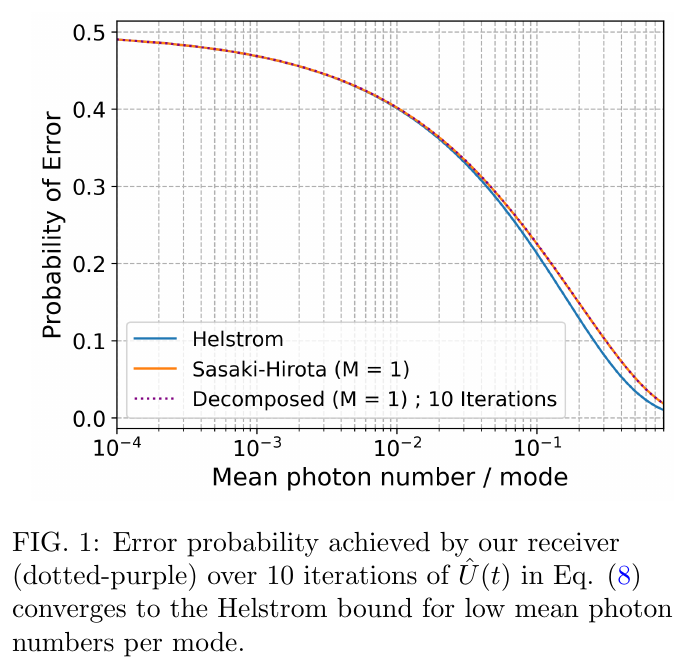
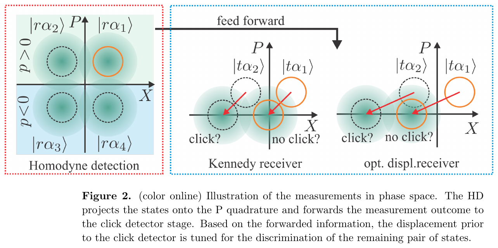
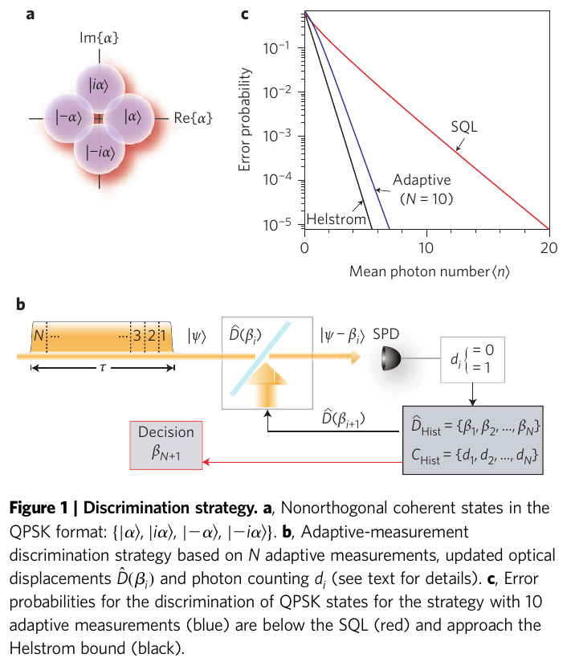
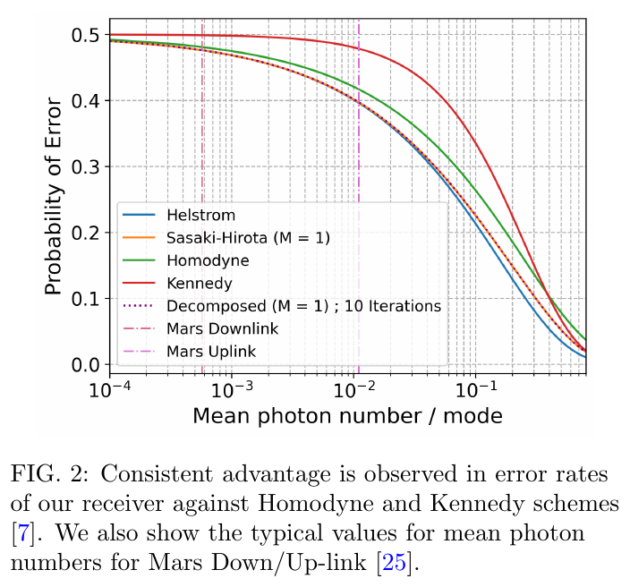
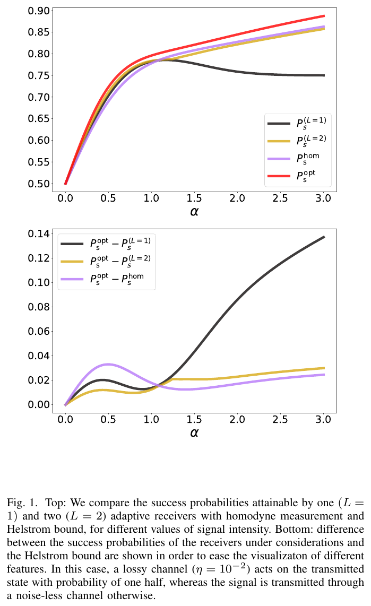
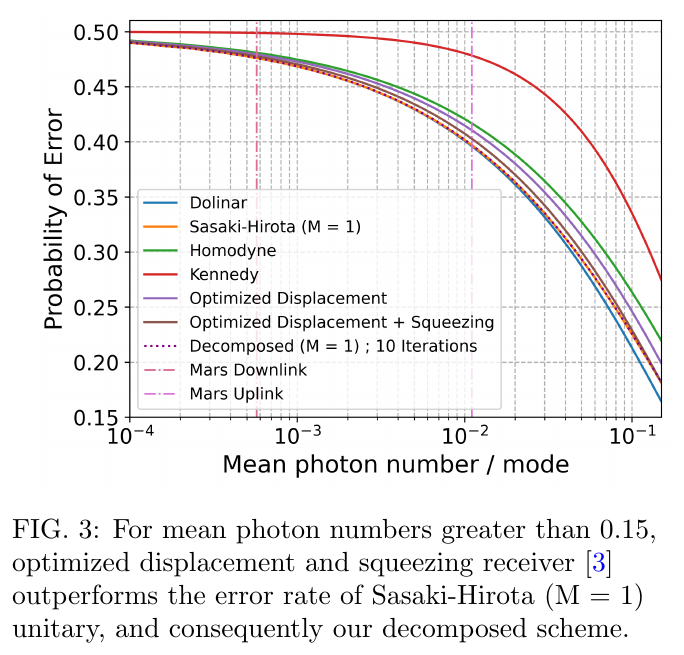
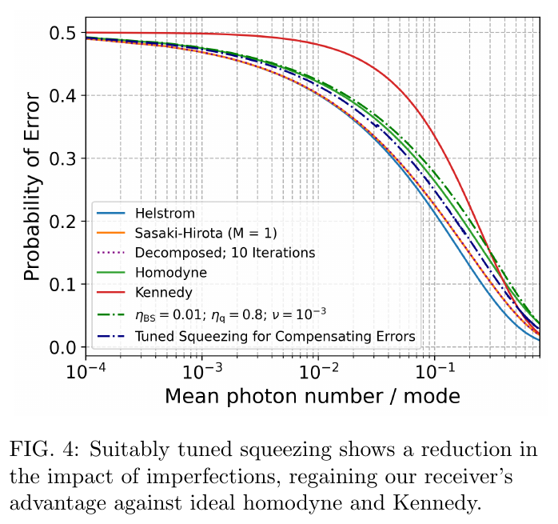
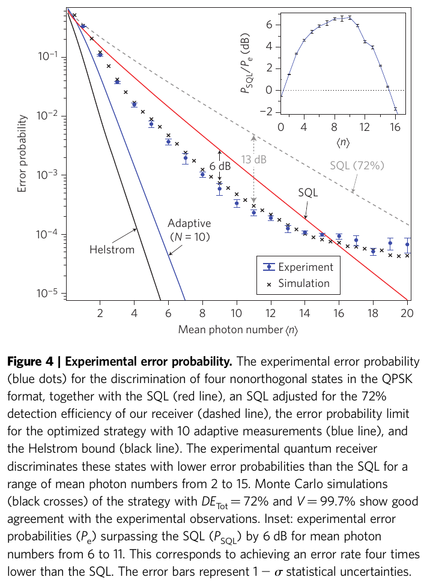
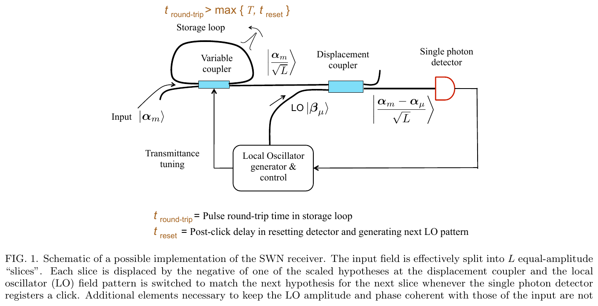
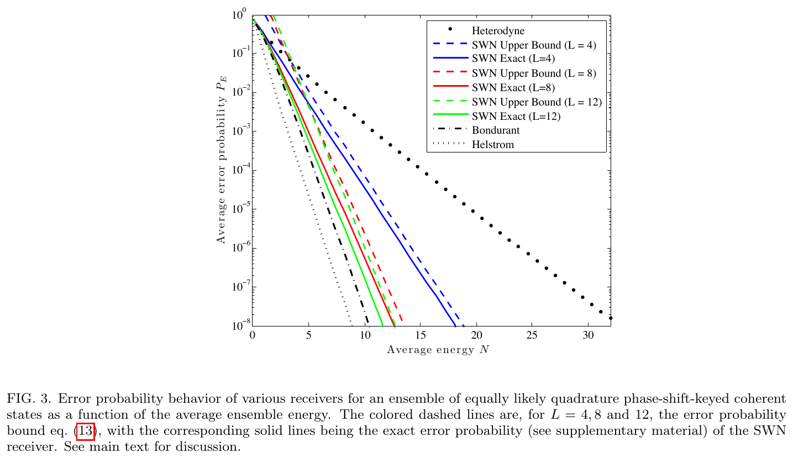

<!doctype html><html lang="en"><head><meta charset="utf-8"><meta name="viewport" content="width=device-width,initial-scale=1">
<title>Module 09 · Kennedy and Dolinar receivers · Quantum Communication · Self-study</title><meta name="description" content="From displacement and photon counting to adaptive feedback and the Helstrom bound"><meta name="robots" content="noindex">
<script src="../../../_shared/gate.js"></script>
<script>(function(){try{var t=localStorage.getItem('site-theme');if(t&&t!=='light')document.documentElement.setAttribute('data-theme',t);var f=localStorage.getItem('site-font');if(f)document.documentElement.style.fontSize=f}catch(e){}})();</script>
<link rel="stylesheet" href="../../../_shared/common.css"><link rel="stylesheet" href="../../../_shared/hust.css"><link rel="stylesheet" href="../../../_shared/katex/katex.min.css"></head><body>
<header class="top"><div class="wrap"><a class="brand" href="../../../en/index.html">⚛ Quantum Communication · Self-study</a><nav><a href="../../../en/index.html">Home</a><a href="../../../en/index.html#lo-trinh">Roadmap</a><a href="../../../en/tai-lieu/index.html">Sources</a><a href="../../../en/thuat-ngu/index.html">Glossary</a><a href="../../../vi/modules/09-kennedy-dolinar/index.html">Tiếng Việt</a>
<details class="menu"><summary>🎨 Appearance</summary><div class="pop"><button data-set-theme="light">Light</button><button data-set-theme="dark">Dark</button><button data-set-theme="sepia">Sepia</button><hr><button data-set-font="14px">Small text</button><button data-set-font="16px">Medium text</button><button data-set-font="19px">Large text</button></div></details></nav></div></header>
<main class="wrap"><div class="crumbs"><a href="../../index.html">Home</a> › Module 09</div><h1>Module 09 · Kennedy and Dolinar receivers</h1><p class="lead">From displacement and photon counting to adaptive feedback and the Helstrom bound</p><div><span class="tag">Source: A_RESEARCH_FOUNDATION/02_OUR_WORK_3_4_STATE/APPROXIMATION_METHODS_PAPERS/03_Kennedy_Dolinar_Receivers</span><span class="tag">Duration ≈ 4 h</span><span class="tag">8 documents</span></div><div class="callout good"><b class="t">🎯 After this module you will be able to</b><ul><li>Derive \(P_K=\tfrac12e^{-4\bar n}\) and verify it in the Fock basis</li><li>Compare Kennedy, homodyne, OD, Dolinar and Helstrom</li><li>Choose a receiver by power regime and compute photon budgets</li></ul></div><details class="more" open><summary>📚 Source documents of this module (each file checked against its actual content)</summary><div><table class="t src"><tr><th>File in the archive</th><th>Paper (verified against its content)</th><th>Pages</th><th>Status</th><th>Link</th><th>Used in this module</th></tr><tr><td>Cook_Martin_Geremia_2007_Closed_Loop_Measurement.pdf</td><td><b>Optical coherent state discrimination using a closed-loop quantum measurement</b><br>R. L. Cook, P. J. Martin, J. M. Geremia · 2007 · Nature 446, 774-777</td><td>?</td><td><span class="badge warn">No extractable text</span></td><td><span class="muted">No public link (get the file from the group shared folder)</span></td><td>The file is a Nature HTML page, not a PDF; nothing quoted.</td></tr><tr><td>Sasaki_Hirota_1996_Optimum_Decision_Scheme.pdf</td><td><b>Teleportation as a quantum computation (nội dung thật / actual content)</b><br>G. Brassard · 1996 · PhysComp96, arXiv:quant-ph/9605035</td><td>3</td><td><span class="badge bad">Wrong file: content does not match the title</span></td><td></td><td>Not the Sasaki-Hirota paper (PRA 54, 2728); not quoted.</td></tr><tr><td>../06_Bounds_and_Limits/Yuen_Kennedy_Lax_1975_Optimum_Testing.pdf</td><td><b>Optimum testing of multiple hypotheses in quantum detection theory</b><br>H. P. Yuen, R. S. Kennedy, M. Lax · 1975 · IEEE Trans. Inf. Theory 21, 125</td><td>?</td><td><span class="badge warn">No extractable text</span></td><td><span class="muted">No public link (get the file from the group shared folder)</span></td><td>The 244-byte file contains a "Request Rejected" error page.</td></tr><tr><td>../../../../F_FUTURE_DIRECTIONS/.../Warke2024_PhotonicHelstromReceiver.pdf</td><td><b>Photonic Quantum Receiver Attaining the Helstrom Bound</b><br>A. Warke et al. · 2024 · arXiv:2410.21800</td><td>8</td><td><span class="badge ok">Read, title matches</span></td><td><a href="https://arxiv.org/abs/2410.21800" target="_blank" rel="noopener">arXiv</a></td><td>Main source: P_Ken, P_hom, Sasaki-Hirota, Figs. 1-4.</td></tr><tr><td>../04_Experimental_Implementations/Wittmann_2012_QPSK_Hybrid_Receiver.pdf</td><td><b>QPSK coherent state discrimination via a hybrid receiver</b><br>C. R. Müller et al. · 2012 · New J. Phys. 14, 083009</td><td>13</td><td><span class="badge ok">Read, title matches</span></td><td><a href="https://arxiv.org/abs/1204.0888" target="_blank" rel="noopener">arXiv</a></td><td>Eqs. (5)-(14), Fig. 2.</td></tr><tr><td>../../../../D_REFERENCES/.../Experimental demonstration of a receiver beating the standard quantum limit....pdf</td><td><b>Experimental demonstration of a receiver beating the standard quantum limit for multiple nonorthogonal state discrimination</b><br>F. E. Becerra et al. · 2013 · Nature Photonics 7, 147-152</td><td>6</td><td><span class="badge ok">Read, title matches</span></td><td><a href="https://doi.org/10.1038/nphoton.2012.316" target="_blank" rel="noopener">DOI</a></td><td>Eqs. (1)-(2), Figs. 1 and 4.</td></tr><tr><td>../04_Experimental_Implementations/Realizable_Receivers_Coherent_State_M-ary_PSK.pdf</td><td><b>Realizable receivers for discriminating arbitrary coherent-state waveforms and multi-copy quantum states near the quantum limit</b><br>R. Nair, S. Guha, S.-H. Tan · 2013 · arXiv:1212.2048</td><td>12</td><td><span class="badge ok">Read, title matches</span></td><td><a href="https://arxiv.org/abs/1212.2048" target="_blank" rel="noopener">arXiv</a></td><td>History, SWN, Figs. 1 and 3.</td></tr><tr><td>../../../../F_FUTURE_DIRECTIONS/.../DiAdamo2022_RLCalibrationCoherentReceivers.pdf</td><td><b>Reinforcement-learning calibration of coherent-state receivers on variable-loss optical channels</b><br>M. Bilkis, M. Rosati, J. Calsamiglia · 2022 · arXiv:2203.09807</td><td>7</td><td><span class="badge ok">Read, title matches</span></td><td><a href="https://doi.org/10.1109/itw48936.2021.9611396" target="_blank" rel="noopener">DOI</a> · <a href="https://arxiv.org/abs/2203.09807" target="_blank" rel="noopener">arXiv</a></td><td>File name says DiAdamo but the real authors are Bilkis et al.; Fig. 1.</td></tr></table></div></details><h2>Lecture (slides)</h2><p class="lead">Use the ← → keys or the buttons; ⛶ opens full-screen presentation.</p><div class="mdeck" id="d-m09"><div class="mdeck-stage"><div class="mdeck-canvas"><div class="mdeck-slide cover"><h2>Kennedy and Dolinar receivers</h2><p style="font-size:20px">From displacement and photon counting to adaptive feedback and the Helstrom bound</p><p style="font-size:15px;color:#566074">Module 09 · Quantum AI Lab</p></div><div class="mdeck-slide part-divider"><div class="kicker">PART 1/5</div><div class="part-num">01</div><h2>Foundations</h2><ul class="part-list"><li>Problem and Helstrom bound</li><li>Displacement and counting</li><li>Standard quantum limit</li></ul></div><div class="mdeck-slide th0"><h2>The binary coherent-state discrimination problem</h2><div class="pd-formula"><div class="pd-formula-label">Mean error probability of a two-hypothesis measurement</div><div class="pd-formula-math">\[ P_e=p_0\,P(1\mid 0)+p_1\,P(0\mid 1)=\tfrac12\bigl(1-\mathrm{Tr}[\Pi_0\rho_0]\bigr)+\tfrac12\,\mathrm{Tr}[\Pi_0\rho_1] \]</div></div><ul class="pd-legend"><li><b>\(\rho_0,\rho_1\)</b><span>received states under hypotheses 0 and 1</span></li><li><b>\(\Pi_0,\ \Pi_1=I-\Pi_0\)</b><span>the two elements of the POVM</span></li><li><b>\(p_0=p_1=\tfrac12\)</b><span>equal priors</span></li></ul><p>The task of this module: bit 0 sends \(|{+}\alpha\rangle\), bit 1 sends \(|{-}\alpha\rangle\); the receiver picks \(\Pi_0\) to minimise \(P_e\). Every receiver in this module is one choice of \(\Pi_0\).</p><details class="slide-explain"><summary>📖 Plain-language explanation for beginners</summary><div class="slide-explain-body">The receiver sees one weak light pulse and must guess which bit was sent. We measure the average chance of a wrong guess and look for the measurement that errs least.</div></details></div><div class="mdeck-slide th0"><h2>Coherent states and their overlap</h2><div class="pd-formula"><div class="pd-formula-label">Coherent state and photon statistics</div><div class="pd-formula-math">\[ |\alpha\rangle=e^{-|\alpha|^2/2}\sum_{n=0}^{\infty}\frac{\alpha^n}{\sqrt{n!}}|n\rangle,\qquad p(n\mid\alpha)=\frac{e^{-|\alpha|^2}|\alpha|^{2n}}{n!} \]</div></div><ul class="pd-legend"><li><b>\(\bar n=|\alpha|^2\)</b><span>mean photon number of the pulse</span></li><li><b>\(p(n\mid\alpha)\)</b><span>Poisson law of the counted photons</span></li></ul><div class="pd-formula"><div class="pd-formula-label">Overlap of two coherent states</div><div class="pd-formula-math">\[ |\langle\alpha|\beta\rangle|^{2}=e^{-|\alpha-\beta|^{2}},\qquad |\langle\alpha|{-}\alpha\rangle|^{2}=e^{-4\bar n} \]</div></div><p style="font-size:.85em;color:var(--muted)">State and Poisson law: (Bilkis et al., 2022, Eq. (2), tr. 1).</p><details class="slide-explain"><summary>📖 Plain-language explanation for beginners</summary><div class="slide-explain-body">Two weak laser pulses always look a little alike. That likeness is e to minus the squared distance between the amplitudes, and it is the root of all errors.</div></details></div><div class="mdeck-slide th0"><h2>The Helstrom bound as the absolute quantum limit</h2><div class="pd-formula"><div class="pd-formula-label">Helstrom bound for pure BPSK, equal priors</div><div class="pd-formula-math">\[ P_H(\bar n)=\tfrac12\Bigl(1-\sqrt{1-e^{-4\bar n}}\Bigr)\ \approx\ \tfrac14\,e^{-4\bar n}\quad(\bar n\gg1) \]</div></div><ul class="pd-legend"><li><b>\(P_H\)</b><span>smallest error of ANY measurement</span></li><li><b>\(e^{-4\bar n}\)</b><span>squared overlap</span></li></ul><div class="cols"><div><figure class="fig"><a href="../../../assets/figures/m09/warke_fig1_helstrom_convergence.png" target="_blank" rel="noopener"></a><figcaption>Helstrom bound (blue) versus mean photon number per mode<br><span>Nguồn: Warke et al., 2024, Fig. 1, tr. 3</span></figcaption></figure></div><div><p>With \(\bar n=0.5\): \(e^{-2}=0.1353\), \(\sqrt{1-0.1353}=0.9299\), so \(P_H=0.0351\).</p><p>The formula comes from Helstrom and is restated in Warke et al., 2024, p. 1.</p></div></div><details class="slide-explain"><summary>📖 Plain-language explanation for beginners</summary><div class="slide-explain-body">No receiver, even an imaginary one, errs less than the Helstrom bound. Every real receiver is compared with this number.</div></details></div><div class="mdeck-slide th0"><h2>Amplitude displacement and photon counting</h2><div class="pd-formula"><div class="pd-formula-label">Displacement operator and the vacuum</div><div class="pd-formula-math">\[ D(\beta)|\alpha\rangle=|\alpha+\beta\rangle,\qquad D(-\alpha)|\alpha\rangle=|0\rangle,\qquad D(-\alpha)|{-}\alpha\rangle=|{-}2\alpha\rangle \]</div></div><ul class="pd-legend"><li><b>\(D(\beta)\)</b><span>mix the pulse with a strong laser to shift the amplitude by β</span></li><li><b>\(|0\rangle\)</b><span>vacuum: never produces a photon</span></li></ul><div class="pd-formula"><div class="pd-formula-label">Probability of no click when the detector sees \(|\gamma\rangle\)</div><div class="pd-formula-math">\[ P(\text{no click}\mid\gamma)=|\langle0|\gamma\rangle|^{2}=e^{-|\gamma|^{2}} \]</div></div><p style="font-size:.85em;color:var(--muted)">(Bilkis et al., 2022, Eq. (9)-(10), tr. 2; Warke et al., 2024, tr. 2.)</p><details class="slide-explain"><summary>📖 Plain-language explanation for beginners</summary><div class="slide-explain-body">The receiver mixes the signal with a strong laser so that one of the two states is pushed to nothing. Then it only asks: was there any photon or not.</div></details></div><div class="mdeck-slide th0"><h2>The standard quantum limit of quadrature detection</h2><div class="pd-formula"><div class="pd-formula-label">The two standard quantum limits for BPSK</div><div class="pd-formula-math">\[ P_{\rm hom}=\tfrac12\Bigl(1-\mathrm{erf}\bigl(\sqrt{2}\,|\alpha|\bigr)\Bigr)=\tfrac12\,\mathrm{erfc}\bigl(\sqrt{2\bar n}\bigr),\qquad P_{\rm het}=\tfrac12\,\mathrm{erfc}\bigl(\sqrt{\bar n}\bigr) \]</div></div><ul class="pd-legend"><li><b>\(\mathrm{erfc}(x)=\tfrac{2}{\sqrt\pi}\int_x^\infty e^{-t^2}dt\)</b><span>complementary error function</span></li><li><b>\(P_{\rm het}\)</b><span>from Eq. (5) of Müller et al. with r = 1</span></li></ul><table class="t "><tr><th>Receiver</th><th>\(\bar n=0.5\)</th><th>\(\bar n=2\)</th><th>exponent as \(\bar n\to\infty\)</th></tr><tr><td>homodyne</td><td>0.07865</td><td>0.00234</td><td>\(e^{-2\bar n}\)</td></tr><tr><td>heterodyne</td><td>0.1587</td><td>0.0228</td><td>\(e^{-\bar n}\)</td></tr><tr><td>Helstrom</td><td>0.03506</td><td>8.39e-05</td><td>\(e^{-4\bar n}\)</td></tr></table><p style="font-size:.85em;color:var(--muted)">(Warke et al., 2024, tr. 3: \(P_{hom}\); Müller et al., 2012, Eq. (5), tr. 5.)</p><details class="slide-explain"><summary>📖 Plain-language explanation for beginners</summary><div class="slide-explain-body">Ordinary receivers (homodyne, heterodyne) measure only one or two components of the light wave. They err far more than the Helstrom bound when the signal is strong.</div></details></div><div class="mdeck-slide th0"><h2>The displace-and-count receiver</h2><div class="pd-formula"><div class="pd-formula-label">How a receiver is defined through its POVM</div><div class="pd-formula-math">\[ \Pi_{\rm no\ click}=D(\beta)|0\rangle\langle0|D^\dagger(\beta)=|\beta\rangle\langle\beta|,\qquad \Pi_{\rm click}=I-|\beta\rangle\langle\beta| \]</div></div><ul class="pd-legend"><li><b>\(\beta\)</b><span>amplitude of the displacing laser, freely chosen</span></li><li><b>\(\Pi_{\rm no\ click}\)</b><span>decides "the nulled hypothesis"</span></li></ul><p>This is the POVM of the Kennedy receiver (Müller et al., 2012, Eq. (6), p. 5). There are only two outcomes (click or none), so every displace-and-count receiver has this form; the difference lies in how \(\beta\) is chosen and whether feedback is used.</p><figure class="fig"><a href="../../../assets/figures/m09/muller_fig2_kennedy_phase_space.png" target="_blank" rel="noopener"></a><figcaption>Kennedy: one state is displaced to vacuum, the other produces a click<br><span>Nguồn: Müller et al., 2012, Fig. 2, tr. 5</span></figcaption></figure><details class="slide-explain"><summary>📖 Plain-language explanation for beginners</summary><div class="slide-explain-body">Pick one hypothesis and cancel it with a laser. If it is right no photon appears; if a photon appears the other hypothesis must be the true one.</div></details></div><div class="mdeck-slide th0"><h2>Timeline of the Kennedy and Dolinar receivers</h2><div class="tl"><svg viewBox="0 0 1307 444" width="100%" role="img"><defs><marker id="ah0f9d58" viewBox="0 0 10 10" refX="9" refY="5" markerWidth="7" markerHeight="7" orient="auto"><path d="M0,0 L10,5 L0,10 z" fill="#0f9d58"/></marker><marker id="ah7a8499" viewBox="0 0 10 10" refX="9" refY="5" markerWidth="7" markerHeight="7" orient="auto"><path d="M0,0 L10,5 L0,10 z" fill="#7a8499"/></marker><marker id="aha05a00" viewBox="0 0 10 10" refX="9" refY="5" markerWidth="7" markerHeight="7" orient="auto"><path d="M0,0 L10,5 L0,10 z" fill="#a05a00"/></marker></defs><line x1="120" y1="36" x2="120" y2="384" stroke="var(--border)"/><text x="120" y="414" font-size="13" fill="var(--muted)" text-anchor="middle">1965</text><line x1="137" y1="36" x2="137" y2="384" stroke="var(--border)"/><text x="137" y="414" font-size="13" fill="var(--muted)" text-anchor="middle">1966</text><line x1="154" y1="36" x2="154" y2="384" stroke="var(--border)"/><text x="154" y="414" font-size="13" fill="var(--muted)" text-anchor="middle">1967</text><line x1="171" y1="36" x2="171" y2="384" stroke="var(--border)"/><text x="171" y="414" font-size="13" fill="var(--muted)" text-anchor="middle">1968</text><line x1="188" y1="36" x2="188" y2="384" stroke="var(--border)"/><text x="188" y="414" font-size="13" fill="var(--muted)" text-anchor="middle">1969</text><line x1="205" y1="36" x2="205" y2="384" stroke="var(--border)"/><text x="205" y="414" font-size="13" fill="var(--muted)" text-anchor="middle">1970</text><line x1="222" y1="36" x2="222" y2="384" stroke="var(--border)"/><text x="222" y="414" font-size="13" fill="var(--muted)" text-anchor="middle">1971</text><line x1="239" y1="36" x2="239" y2="384" stroke="var(--border)"/><text x="239" y="414" font-size="13" fill="var(--muted)" text-anchor="middle">1972</text><line x1="256" y1="36" x2="256" y2="384" stroke="var(--border)"/><text x="256" y="414" font-size="13" fill="var(--muted)" text-anchor="middle">1973</text><line x1="273" y1="36" x2="273" y2="384" stroke="var(--border)"/><text x="273" y="414" font-size="13" fill="var(--muted)" text-anchor="middle">1974</text><line x1="290" y1="36" x2="290" y2="384" stroke="var(--border)"/><text x="290" y="414" font-size="13" fill="var(--muted)" text-anchor="middle">1975</text><line x1="307" y1="36" x2="307" y2="384" stroke="var(--border)"/><text x="307" y="414" font-size="13" fill="var(--muted)" text-anchor="middle">1976</text><line x1="324" y1="36" x2="324" y2="384" stroke="var(--border)"/><text x="324" y="414" font-size="13" fill="var(--muted)" text-anchor="middle">1977</text><line x1="341" y1="36" x2="341" y2="384" stroke="var(--border)"/><text x="341" y="414" font-size="13" fill="var(--muted)" text-anchor="middle">1978</text><line x1="358" y1="36" x2="358" y2="384" stroke="var(--border)"/><text x="358" y="414" font-size="13" fill="var(--muted)" text-anchor="middle">1979</text><line x1="375" y1="36" x2="375" y2="384" stroke="var(--border)"/><text x="375" y="414" font-size="13" fill="var(--muted)" text-anchor="middle">1980</text><line x1="392" y1="36" x2="392" y2="384" stroke="var(--border)"/><text x="392" y="414" font-size="13" fill="var(--muted)" text-anchor="middle">1981</text><line x1="409" y1="36" x2="409" y2="384" stroke="var(--border)"/><text x="409" y="414" font-size="13" fill="var(--muted)" text-anchor="middle">1982</text><line x1="426" y1="36" x2="426" y2="384" stroke="var(--border)"/><text x="426" y="414" font-size="13" fill="var(--muted)" text-anchor="middle">1983</text><line x1="443" y1="36" x2="443" y2="384" stroke="var(--border)"/><text x="443" y="414" font-size="13" fill="var(--muted)" text-anchor="middle">1984</text><line x1="460" y1="36" x2="460" y2="384" stroke="var(--border)"/><text x="460" y="414" font-size="13" fill="var(--muted)" text-anchor="middle">1985</text><line x1="477" y1="36" x2="477" y2="384" stroke="var(--border)"/><text x="477" y="414" font-size="13" fill="var(--muted)" text-anchor="middle">1986</text><line x1="494" y1="36" x2="494" y2="384" stroke="var(--border)"/><text x="494" y="414" font-size="13" fill="var(--muted)" text-anchor="middle">1987</text><line x1="511" y1="36" x2="511" y2="384" stroke="var(--border)"/><text x="511" y="414" font-size="13" fill="var(--muted)" text-anchor="middle">1988</text><line x1="528" y1="36" x2="528" y2="384" stroke="var(--border)"/><text x="528" y="414" font-size="13" fill="var(--muted)" text-anchor="middle">1989</text><line x1="545" y1="36" x2="545" y2="384" stroke="var(--border)"/><text x="545" y="414" font-size="13" fill="var(--muted)" text-anchor="middle">1990</text><line x1="562" y1="36" x2="562" y2="384" stroke="var(--border)"/><text x="562" y="414" font-size="13" fill="var(--muted)" text-anchor="middle">1991</text><line x1="579" y1="36" x2="579" y2="384" stroke="var(--border)"/><text x="579" y="414" font-size="13" fill="var(--muted)" text-anchor="middle">1992</text><line x1="596" y1="36" x2="596" y2="384" stroke="var(--border)"/><text x="596" y="414" font-size="13" fill="var(--muted)" text-anchor="middle">1993</text><line x1="613" y1="36" x2="613" y2="384" stroke="var(--border)"/><text x="613" y="414" font-size="13" fill="var(--muted)" text-anchor="middle">1994</text><line x1="630" y1="36" x2="630" y2="384" stroke="var(--border)"/><text x="630" y="414" font-size="13" fill="var(--muted)" text-anchor="middle">1995</text><line x1="647" y1="36" x2="647" y2="384" stroke="var(--border)"/><text x="647" y="414" font-size="13" fill="var(--muted)" text-anchor="middle">1996</text><line x1="664" y1="36" x2="664" y2="384" stroke="var(--border)"/><text x="664" y="414" font-size="13" fill="var(--muted)" text-anchor="middle">1997</text><line x1="681" y1="36" x2="681" y2="384" stroke="var(--border)"/><text x="681" y="414" font-size="13" fill="var(--muted)" text-anchor="middle">1998</text><line x1="698" y1="36" x2="698" y2="384" stroke="var(--border)"/><text x="698" y="414" font-size="13" fill="var(--muted)" text-anchor="middle">1999</text><line x1="715" y1="36" x2="715" y2="384" stroke="var(--border)"/><text x="715" y="414" font-size="13" fill="var(--muted)" text-anchor="middle">2000</text><line x1="732" y1="36" x2="732" y2="384" stroke="var(--border)"/><text x="732" y="414" font-size="13" fill="var(--muted)" text-anchor="middle">2001</text><line x1="749" y1="36" x2="749" y2="384" stroke="var(--border)"/><text x="749" y="414" font-size="13" fill="var(--muted)" text-anchor="middle">2002</text><line x1="766" y1="36" x2="766" y2="384" stroke="var(--border)"/><text x="766" y="414" font-size="13" fill="var(--muted)" text-anchor="middle">2003</text><line x1="783" y1="36" x2="783" y2="384" stroke="var(--border)"/><text x="783" y="414" font-size="13" fill="var(--muted)" text-anchor="middle">2004</text><line x1="800" y1="36" x2="800" y2="384" stroke="var(--border)"/><text x="800" y="414" font-size="13" fill="var(--muted)" text-anchor="middle">2005</text><line x1="817" y1="36" x2="817" y2="384" stroke="var(--border)"/><text x="817" y="414" font-size="13" fill="var(--muted)" text-anchor="middle">2006</text><line x1="834" y1="36" x2="834" y2="384" stroke="var(--border)"/><text x="834" y="414" font-size="13" fill="var(--muted)" text-anchor="middle">2007</text><line x1="851" y1="36" x2="851" y2="384" stroke="var(--border)"/><text x="851" y="414" font-size="13" fill="var(--muted)" text-anchor="middle">2008</text><line x1="868" y1="36" x2="868" y2="384" stroke="var(--border)"/><text x="868" y="414" font-size="13" fill="var(--muted)" text-anchor="middle">2009</text><line x1="885" y1="36" x2="885" y2="384" stroke="var(--border)"/><text x="885" y="414" font-size="13" fill="var(--muted)" text-anchor="middle">2010</text><line x1="902" y1="36" x2="902" y2="384" stroke="var(--border)"/><text x="902" y="414" font-size="13" fill="var(--muted)" text-anchor="middle">2011</text><line x1="919" y1="36" x2="919" y2="384" stroke="var(--border)"/><text x="919" y="414" font-size="13" fill="var(--muted)" text-anchor="middle">2012</text><line x1="936" y1="36" x2="936" y2="384" stroke="var(--border)"/><text x="936" y="414" font-size="13" fill="var(--muted)" text-anchor="middle">2013</text><line x1="953" y1="36" x2="953" y2="384" stroke="var(--border)"/><text x="953" y="414" font-size="13" fill="var(--muted)" text-anchor="middle">2014</text><line x1="970" y1="36" x2="970" y2="384" stroke="var(--border)"/><text x="970" y="414" font-size="13" fill="var(--muted)" text-anchor="middle">2015</text><line x1="987" y1="36" x2="987" y2="384" stroke="var(--border)"/><text x="987" y="414" font-size="13" fill="var(--muted)" text-anchor="middle">2016</text><line x1="1004" y1="36" x2="1004" y2="384" stroke="var(--border)"/><text x="1004" y="414" font-size="13" fill="var(--muted)" text-anchor="middle">2017</text><line x1="1021" y1="36" x2="1021" y2="384" stroke="var(--border)"/><text x="1021" y="414" font-size="13" fill="var(--muted)" text-anchor="middle">2018</text><line x1="1038" y1="36" x2="1038" y2="384" stroke="var(--border)"/><text x="1038" y="414" font-size="13" fill="var(--muted)" text-anchor="middle">2019</text><line x1="1055" y1="36" x2="1055" y2="384" stroke="var(--border)"/><text x="1055" y="414" font-size="13" fill="var(--muted)" text-anchor="middle">2020</text><line x1="1072" y1="36" x2="1072" y2="384" stroke="var(--border)"/><text x="1072" y="414" font-size="13" fill="var(--muted)" text-anchor="middle">2021</text><line x1="1089" y1="36" x2="1089" y2="384" stroke="var(--border)"/><text x="1089" y="414" font-size="13" fill="var(--muted)" text-anchor="middle">2022</text><line x1="1106" y1="36" x2="1106" y2="384" stroke="var(--border)"/><text x="1106" y="414" font-size="13" fill="var(--muted)" text-anchor="middle">2023</text><line x1="1123" y1="36" x2="1123" y2="384" stroke="var(--border)"/><text x="1123" y="414" font-size="13" fill="var(--muted)" text-anchor="middle">2024</text><line x1="1140" y1="36" x2="1140" y2="384" stroke="var(--border)"/><text x="1140" y="414" font-size="13" fill="var(--muted)" text-anchor="middle">2025</text><line x1="100" y1="70" x2="1187" y2="70" stroke="#2b5ce6" stroke-width="2.5" opacity=".5"/><foreignObject x="0" y="46" width="90" height="48"><div xmlns="http://www.w3.org/1999/xhtml" style="font:700 14px sans-serif;color:#2b5ce6;text-align:right;line-height:1.25;height:48px;display:flex;align-items:center;justify-content:flex-end"><span>Theory limits</span></div></foreignObject><line x1="100" y1="158" x2="1187" y2="158" stroke="#0f9d58" stroke-width="2.5" opacity=".5"/><foreignObject x="0" y="134" width="90" height="48"><div xmlns="http://www.w3.org/1999/xhtml" style="font:700 14px sans-serif;color:#0f9d58;text-align:right;line-height:1.25;height:48px;display:flex;align-items:center;justify-content:flex-end"><span>Receiver designs</span></div></foreignObject><line x1="100" y1="246" x2="1187" y2="246" stroke="#ce1628" stroke-width="2.5" opacity=".5"/><foreignObject x="0" y="222" width="90" height="48"><div xmlns="http://www.w3.org/1999/xhtml" style="font:700 14px sans-serif;color:#ce1628;text-align:right;line-height:1.25;height:48px;display:flex;align-items:center;justify-content:flex-end"><span>Experiments</span></div></foreignObject><line x1="100" y1="334" x2="1187" y2="334" stroke="#a05a00" stroke-width="2.5" opacity=".5"/><foreignObject x="0" y="310" width="90" height="48"><div xmlns="http://www.w3.org/1999/xhtml" style="font:700 14px sans-serif;color:#a05a00;text-align:right;line-height:1.25;height:48px;display:flex;align-items:center;justify-content:flex-end"><span>Recent</span></div></foreignObject><line x1="162.6" y1="76.9" x2="253.8" y2="149.9" stroke="#7a8499" stroke-width="1.4" stroke-dasharray="5,4" opacity=".85" marker-end="url(#ah7a8499)"/><line x1="259.0" y1="158.0" x2="251.0" y2="158.0" stroke="#7a8499" stroke-width="1.4" stroke-dasharray="5,4" opacity=".85" marker-end="url(#ah7a8499)"/><line x1="274.9" y1="159.7" x2="821.2" y2="244.0" stroke="#0f9d58" stroke-width="1.8" opacity=".85" marker-end="url(#ah0f9d58)"/><line x1="275.0" y1="158.0" x2="634.0" y2="158.0" stroke="#7a8499" stroke-width="1.4" stroke-dasharray="5,4" opacity=".85" marker-end="url(#ah7a8499)"/><line x1="657.3" y1="161.8" x2="1110.8" y2="329.5" stroke="#a05a00" stroke-width="1.8" opacity=".85" marker-end="url(#aha05a00)"/><line x1="259.0" y1="158.0" x2="583.0" y2="158.0" stroke="#7a8499" stroke-width="1.4" stroke-dasharray="5,4" opacity=".85" marker-end="url(#ah7a8499)"/><line x1="606.6" y1="160.8" x2="923.4" y2="242.7" stroke="#7a8499" stroke-width="1.4" stroke-dasharray="5,4" opacity=".85" marker-end="url(#ah7a8499)"/><line x1="258.9" y1="159.4" x2="906.1" y2="244.3" stroke="#7a8499" stroke-width="1.4" stroke-dasharray="5,4" opacity=".85" marker-end="url(#ah7a8499)"/><line x1="165.0" y1="70.0" x2="923.0" y2="70.0" stroke="#7a8499" stroke-width="1.4" stroke-dasharray="5,4" opacity=".85" marker-end="url(#ah7a8499)"/><line x1="258.8" y1="160.3" x2="1076.3" y2="331.3" stroke="#7a8499" stroke-width="1.4" stroke-dasharray="5,4" opacity=".85" marker-end="url(#ah7a8499)"/><line x1="274.8" y1="160.3" x2="1076.3" y2="331.3" stroke="#7a8499" stroke-width="1.4" stroke-dasharray="5,4" opacity=".85" marker-end="url(#ah7a8499)"/><circle cx="154" cy="70" r="8" fill="#2b5ce6" stroke="var(--panel)" stroke-width="2"/><foreignObject x="79.0" y="6" width="150" height="52"><div xmlns="http://www.w3.org/1999/xhtml" style="height:52px;display:flex;flex-direction:column;justify-content:flex-end;align-items:center;text-align:center;font-family:sans-serif"><div style="background:color-mix(in srgb,var(--panel) 90%,transparent);padding:0 3px;border-radius:3px"><div style="font-weight:800;font-size:15px;color:var(--text);line-height:1.15">Helstrom</div><div style="font-size:11.5px;color:var(--muted);line-height:1.2">Minimum-error bound</div></div></div></foreignObject><circle cx="290" cy="70" r="6" fill="#2b5ce6" stroke="var(--panel)" stroke-width="2"/><foreignObject x="215.0" y="6" width="150" height="52"><div xmlns="http://www.w3.org/1999/xhtml" style="height:52px;display:flex;flex-direction:column;justify-content:flex-end;align-items:center;text-align:center;font-family:sans-serif"><div style="background:color-mix(in srgb,var(--panel) 90%,transparent);padding:0 3px;border-radius:3px"><div style="font-weight:700;font-size:13.5px;color:var(--text);line-height:1.15">Yuen–Kennedy–Lax</div><div style="font-size:11.5px;color:var(--muted);line-height:1.2">Optimality conditions</div></div></div></foreignObject><circle cx="936" cy="70" r="6" fill="#2b5ce6" stroke="var(--panel)" stroke-width="2"/><foreignObject x="861.0" y="6" width="150" height="52"><div xmlns="http://www.w3.org/1999/xhtml" style="height:52px;display:flex;flex-direction:column;justify-content:flex-end;align-items:center;text-align:center;font-family:sans-serif"><div style="background:color-mix(in srgb,var(--panel) 90%,transparent);padding:0 3px;border-radius:3px"><div style="font-weight:700;font-size:13.5px;color:var(--text);line-height:1.15">Nair et al.</div><div style="font-size:11.5px;color:var(--muted);line-height:1.2">Chernoff exponent</div></div></div></foreignObject><circle cx="248" cy="158" r="8" fill="#0f9d58" stroke="var(--panel)" stroke-width="2"/><foreignObject x="173.0" y="94" width="150" height="52"><div xmlns="http://www.w3.org/1999/xhtml" style="height:52px;display:flex;flex-direction:column;justify-content:flex-end;align-items:center;text-align:center;font-family:sans-serif"><div style="background:color-mix(in srgb,var(--panel) 90%,transparent);padding:0 3px;border-radius:3px"><div style="font-weight:800;font-size:15px;color:var(--text);line-height:1.15">Kennedy</div><div style="font-size:11.5px;color:var(--muted);line-height:1.2">Displace + count</div></div></div></foreignObject><circle cx="264" cy="158" r="8" fill="#0f9d58" stroke="var(--panel)" stroke-width="2"/><foreignObject x="189.0" y="170" width="150" height="52"><div xmlns="http://www.w3.org/1999/xhtml" style="height:52px;display:flex;flex-direction:column;justify-content:flex-start;align-items:center;text-align:center;font-family:sans-serif"><div style="background:color-mix(in srgb,var(--panel) 90%,transparent);padding:0 3px;border-radius:3px"><div style="font-weight:800;font-size:15px;color:var(--text);line-height:1.15">Dolinar</div><div style="font-size:11.5px;color:var(--muted);line-height:1.2">Feedback, hits Helstrom</div></div></div></foreignObject><circle cx="596" cy="158" r="6" fill="#0f9d58" stroke="var(--panel)" stroke-width="2"/><foreignObject x="521.0" y="94" width="150" height="52"><div xmlns="http://www.w3.org/1999/xhtml" style="height:52px;display:flex;flex-direction:column;justify-content:flex-end;align-items:center;text-align:center;font-family:sans-serif"><div style="background:color-mix(in srgb,var(--panel) 90%,transparent);padding:0 3px;border-radius:3px"><div style="font-weight:700;font-size:13.5px;color:var(--text);line-height:1.15">Bondurant</div><div style="font-size:11.5px;color:var(--muted);line-height:1.2">Sequential nulling</div></div></div></foreignObject><circle cx="647" cy="158" r="6" fill="#0f9d58" stroke="var(--panel)" stroke-width="2"/><foreignObject x="572.0" y="170" width="150" height="52"><div xmlns="http://www.w3.org/1999/xhtml" style="height:52px;display:flex;flex-direction:column;justify-content:flex-start;align-items:center;text-align:center;font-family:sans-serif"><div style="background:color-mix(in srgb,var(--panel) 90%,transparent);padding:0 3px;border-radius:3px"><div style="font-weight:700;font-size:13.5px;color:var(--text);line-height:1.15">Sasaki–Hirota</div><div style="font-size:11.5px;color:var(--muted);line-height:1.2">One-shot, no feedback</div></div></div></foreignObject><circle cx="851" cy="158" r="6" fill="#0f9d58" stroke="var(--panel)" stroke-width="2"/><foreignObject x="776.0" y="94" width="150" height="52"><div xmlns="http://www.w3.org/1999/xhtml" style="height:52px;display:flex;flex-direction:column;justify-content:flex-end;align-items:center;text-align:center;font-family:sans-serif"><div style="background:color-mix(in srgb,var(--panel) 90%,transparent);padding:0 3px;border-radius:3px"><div style="font-weight:700;font-size:13.5px;color:var(--text);line-height:1.15">Takeoka–Sasaki</div><div style="font-size:11.5px;color:var(--muted);line-height:1.2">Displacement + squeezing</div></div></div></foreignObject><circle cx="834" cy="246" r="8" fill="#ce1628" stroke="var(--panel)" stroke-width="2"/><foreignObject x="759.0" y="182" width="150" height="52"><div xmlns="http://www.w3.org/1999/xhtml" style="height:52px;display:flex;flex-direction:column;justify-content:flex-end;align-items:center;text-align:center;font-family:sans-serif"><div style="background:color-mix(in srgb,var(--panel) 90%,transparent);padding:0 3px;border-radius:3px"><div style="font-weight:800;font-size:15px;color:var(--text);line-height:1.15">Cook et al.</div><div style="font-size:11.5px;color:var(--muted);line-height:1.2">Closed loop (Nature)</div></div></div></foreignObject><circle cx="919" cy="246" r="6" fill="#ce1628" stroke="var(--panel)" stroke-width="2"/><foreignObject x="844.0" y="258" width="150" height="52"><div xmlns="http://www.w3.org/1999/xhtml" style="height:52px;display:flex;flex-direction:column;justify-content:flex-start;align-items:center;text-align:center;font-family:sans-serif"><div style="background:color-mix(in srgb,var(--panel) 90%,transparent);padding:0 3px;border-radius:3px"><div style="font-weight:700;font-size:13.5px;color:var(--text);line-height:1.15">Müller et al.</div><div style="font-size:11.5px;color:var(--muted);line-height:1.2">QPSK hybrid receiver</div></div></div></foreignObject><circle cx="936" cy="246" r="8" fill="#ce1628" stroke="var(--panel)" stroke-width="2"/><foreignObject x="861.0" y="182" width="150" height="52"><div xmlns="http://www.w3.org/1999/xhtml" style="height:52px;display:flex;flex-direction:column;justify-content:flex-end;align-items:center;text-align:center;font-family:sans-serif"><div style="background:color-mix(in srgb,var(--panel) 90%,transparent);padding:0 3px;border-radius:3px"><div style="font-weight:800;font-size:15px;color:var(--text);line-height:1.15">Becerra et al.</div><div style="font-size:11.5px;color:var(--muted);line-height:1.2">QPSK below SQL</div></div></div></foreignObject><circle cx="1089" cy="334" r="6" fill="#a05a00" stroke="var(--panel)" stroke-width="2"/><foreignObject x="1014.0" y="270" width="150" height="52"><div xmlns="http://www.w3.org/1999/xhtml" style="height:52px;display:flex;flex-direction:column;justify-content:flex-end;align-items:center;text-align:center;font-family:sans-serif"><div style="background:color-mix(in srgb,var(--panel) 90%,transparent);padding:0 3px;border-radius:3px"><div style="font-weight:700;font-size:13.5px;color:var(--text);line-height:1.15">Bilkis et al.</div><div style="font-size:11.5px;color:var(--muted);line-height:1.2">RL calibration</div></div></div></foreignObject><circle cx="1123" cy="334" r="6" fill="#a05a00" stroke="var(--panel)" stroke-width="2"/><foreignObject x="1048.0" y="346" width="150" height="52"><div xmlns="http://www.w3.org/1999/xhtml" style="height:52px;display:flex;flex-direction:column;justify-content:flex-start;align-items:center;text-align:center;font-family:sans-serif"><div style="background:color-mix(in srgb,var(--panel) 90%,transparent);padding:0 3px;border-radius:3px"><div style="font-weight:700;font-size:13.5px;color:var(--text);line-height:1.15">Warke et al.</div><div style="font-size:11.5px;color:var(--muted);line-height:1.2">Photonic Helstrom</div></div></div></foreignObject></svg></div><p style="font-size:.82em;color:var(--muted);margin-top:2px">Years come from the reference lists of Warke et al. (2024, [1],[7]-[9]) and Nair et al. (2013, [8],[24]-[27],[32],[38]) and from each paper\'s first page. Dashed: idea influence; solid: direct dependence.</p><details class="slide-explain"><summary>📖 Plain-language explanation for beginners</summary><div class="slide-explain-body">Kennedy and Dolinar date from the same year, 1973. Half a century later people still look for receivers reaching the Helstrom bound without fast feedback.</div></details></div><div class="mdeck-slide part-divider"><div class="kicker">PART 2/5</div><div class="part-num">02</div><h2>Methods</h2><ul class="part-list"><li>Kennedy: displace and count</li><li>Dolinar: adaptive feedback</li><li>One-shot and multi-layer receivers</li></ul></div><div class="mdeck-slide th1"><h2>The Kennedy receiver</h2><div class="pd-formula"><div class="pd-formula-label">Kennedy decision rule</div><div class="pd-formula-math">\[ \text{shift }D(-\alpha):\ |{+}\alpha\rangle\to|0\rangle,\ \ |{-}\alpha\rangle\to|{-}2\alpha\rangle;\qquad \text{no click}\Rightarrow\hat b=0,\ \ \text{click}\Rightarrow\hat b=1 \]</div></div><ul class="pd-legend"><li><b>\(\hat b\)</b><span>the bit the receiver decides</span></li><li><b>\(|{-}2\alpha\rangle\)</b><span>the other state, now with doubled amplitude</span></li></ul><figure class="fig"><a href="../../../assets/figures/m09/becerra_fig1_adaptive_strategy.png" target="_blank" rel="noopener"></a><figcaption>Block diagram: displacement, single-photon detector, feedback update (N slots)<br><span>Nguồn: Becerra et al., Nat. Photon. 7, 2013, Fig. 1, tr. 148</span></figcaption></figure><details class="slide-explain"><summary>📖 Plain-language explanation for beginners</summary><div class="slide-explain-body">Kennedy guesses "bit 0" if no photon is seen after cancelling the +α state. Seeing a photon means it was certainly bit 1.</div></details></div><div class="mdeck-slide th1"><h2>Closed-form error probability of Kennedy</h2><div class="pd-formula"><div class="pd-formula-label">Conditional error probabilities</div><div class="pd-formula-math">\[ P(\text{err}\mid{+}\alpha)=0,\qquad P(\text{err}\mid{-}\alpha)=P(\text{no click}\mid{-}2\alpha)=e^{-4\bar n} \]</div></div><div class="pd-formula"><div class="pd-formula-label">Closed-form Kennedy error probability</div><div class="pd-formula-math">\[ P_K(\bar n)=\tfrac12\,e^{-4\bar n},\qquad \text{general: }P_K=\tfrac12\,e^{-|\alpha_0-\alpha_1|^{2}} \]</div></div><ul class="pd-legend"><li><b>\(\tfrac12\)</b><span>prior probability of bit 1</span></li><li><b>\(e^{-4\bar n}\)</b><span>probability of no click on \(|{-}2\alpha\rangle\): \(e^{-|2\alpha|^2}\)</span></li></ul><p style="font-size:.85em;color:var(--muted)">Same result in Warke et al., 2024, tr. 3 (\(P_{Ken}=\tfrac12e^{-4|\alpha|^2}\)).  Numerical check: against the Fock-basis trace with d = 60, difference below \(10^{-15}\).</p><details class="slide-explain"><summary>📖 Plain-language explanation for beginners</summary><div class="slide-explain-body">An error happens only when bit 1 is sent and the photon goes undetected. That chance is e to minus 4 times the mean photon number, times a half because bit 1 appears half of the time.</div></details></div><div class="mdeck-slide th1"><h2>Kennedy versus Helstrom: a gap of at most 2</h2><div class="pd-formula"><div class="pd-formula-label">Kennedy over Helstrom, an exact result</div><div class="pd-formula-math">\[ \frac{P_K}{P_H}=\frac{e^{-4\bar n}}{1-\sqrt{1-e^{-4\bar n}}}=1+\sqrt{1-e^{-4\bar n}}\ \longrightarrow\ 2\quad(\bar n\to\infty) \]</div></div><ul class="pd-legend"><li><b>\(x=e^{-4\bar n}\)</b><span>using \(1-\sqrt{1-x}=x/(1+\sqrt{1-x})\)</span></li><li><b>\(P_K/P_H\to1\)</b><span>as \(\bar n\to0\)</span></li></ul><table class="t "><tr><th>\(\bar n\)</th><th>Helstrom</th><th>Kennedy</th><th>K/H</th><th>\(1+\sqrt{1-e^{-4\bar n}}\)</th></tr><tr><td>0.1</td><td>0.2129</td><td>0.3352</td><td>1.574</td><td>1.574</td></tr><tr><td>0.5</td><td>0.03506</td><td>0.06767</td><td>1.93</td><td>1.93</td></tr><tr><td>1</td><td>0.0046</td><td>0.009158</td><td>1.991</td><td>1.991</td></tr><tr><td>2</td><td>8.387e-05</td><td>0.0001677</td><td>2</td><td>2</td></tr><tr><td>4</td><td>2.813e-08</td><td>5.627e-08</td><td>2</td><td>2</td></tr></table><p>Both receivers share the error exponent 4, so they differ by a factor of at most 2. This agrees with "Kennedy reaches the Helstrom exponent for large \(|\alpha|\)" in Warke et al. (2024, p. 1) and Nair et al. (2013, p. 2).</p><details class="slide-explain"><summary>📖 Plain-language explanation for beginners</summary><div class="slide-explain-body">Kennedy errs twice as often as Helstrom when the signal is strong, but both fall at the same rate. With weak signals Kennedy is nearly equal to Helstrom.</div></details></div><div class="mdeck-slide th1"><h2>Where Kennedy beats homodyne</h2><div class="pd-formula"><div class="pd-formula-label">Crossing of Kennedy and homodyne</div><div class="pd-formula-math">\[ \tfrac12e^{-4\bar n^\ast}=\tfrac12\,\mathrm{erfc}\bigl(\sqrt{2\bar n^\ast}\bigr)\ \Rightarrow\ \bar n^\ast=0.3841 \]</div></div><ul class="pd-legend"><li><b>\(\bar n\lt\bar n^\ast\)</b><span>homodyne beats Kennedy</span></li><li><b>\(\bar n\gt\bar n^\ast\)</b><span>Kennedy beats homodyne</span></li></ul><div class="cols"><div><figure class="fig"><a href="../../../assets/figures/m09/warke_fig2_vs_homodyne_kennedy.png" target="_blank" rel="noopener"></a><figcaption>P_e of Helstrom, homodyne and Kennedy versus n̄ (red: Kennedy)<br><span>Nguồn: Warke et al., 2024, Fig. 2, tr. 3</span></figcaption></figure></div><div><p>The numerical root from brentq is \(\bar n^\ast=0.3841\); the papers say homodyne beats Kennedy for \(|\alpha|^2\lesssim0.4\) (Warke et al., 2024, p. 3) and Kennedy wins for \(\bar n>0.4\) (Müller et al., 2012, p. 7). Against heterodyne the crossing is at \(\bar n=0.1148\).</p></div></div><details class="slide-explain"><summary>📖 Plain-language explanation for beginners</summary><div class="slide-explain-body">Kennedy only pays off when each pulse carries more than about 0.38 photons. For very weak signals, such as deep-space links, homodyne is actually better.</div></details></div><div class="mdeck-slide th1"><h2>The optimised-displacement receiver</h2><div class="pd-formula"><div class="pd-formula-label">Optimised displacement (OD) receiver: error versus shift β</div><div class="pd-formula-math">\[ P_{OD}(\beta)=\tfrac12\Bigl[\bigl(1-e^{-(\alpha-\beta)^2}\bigr)+e^{-(\alpha+\beta)^2}\Bigr],\qquad \frac{\partial P_{OD}}{\partial\beta}=0\iff\alpha=\beta\tanh(2\alpha\beta) \]</div></div><ul class="pd-legend"><li><b>\(\beta=\alpha\)</b><span>recovers the Kennedy receiver</span></li><li><b>\(\alpha=\beta\tanh(2\alpha\beta)\)</b><span>transcendental equation; for QPSK see Eq. (10) of Müller et al.</span></li></ul><table class="t "><tr><th>\(\bar n\)</th><th>\(\beta^\ast\)</th><th>OD</th><th>Kennedy</th><th>Helstrom</th></tr><tr><td>0.1</td><td>0.7316</td><td>0.246</td><td>0.3352</td><td>0.2129</td></tr><tr><td>0.5</td><td>0.8483</td><td>0.05436</td><td>0.06767</td><td>0.03506</td></tr><tr><td>1</td><td>1.033</td><td>0.008561</td><td>0.009158</td><td>0.0046</td></tr><tr><td>2</td><td>1.415</td><td>0.0001673</td><td>0.0001677</td><td>8.387e-05</td></tr><tr><td>4</td><td>2</td><td>5.627e-08</td><td>5.627e-08</td><td>2.813e-08</td></tr></table><p style="font-size:.85em;color:var(--muted)">We derive \(P_{OD}\) ourselves and check it numerically: the residual of the transcendental equation is below \(10^{-8}\). Same structure as Müller et al., 2012, Eq. (10)-(14), pp. 6-7.</p><details class="slide-explain"><summary>📖 Plain-language explanation for beginners</summary><div class="slide-explain-body">A shift slightly off perfect cancellation actually guesses better. For very strong signals the optimum tends to exactly Kennedy.</div></details></div><div class="mdeck-slide th1"><h2>The Dolinar receiver: continuous adaptive feedback</h2><div class="pd-formula"><div class="pd-formula-label">Dolinar receiver: the derived feedback law</div><div class="pd-formula-math">\[ \frac{d\Lambda}{dt}=4\alpha^{2}\coth\frac{\Lambda}{2},\qquad \beta(t)=\pm\,\alpha\coth\frac{\Lambda(t)}{2},\qquad \Lambda\to-\Lambda\ \text{at each click} \]</div></div><ul class="pd-legend"><li><b>\(\Lambda(t)\)</b><span>log-likelihood ratio of the two hypotheses given data up to time t</span></li><li><b>\(\beta(t)\)</b><span>displacement, sign set by the leading hypothesis</span></li></ul><table class="t "><tr><th>\(\bar n\)</th><th>Dolinar (simulated, \(10^5\) pulses)</th><th>Helstrom</th><th>Kennedy</th></tr><tr><td>0.1</td><td>0.2137 ± 0.0016</td><td>0.2129</td><td>0.3352</td></tr><tr><td>0.5</td><td>0.0352 ± 0.0016</td><td>0.03506</td><td>0.06767</td></tr></table><p>The Monte Carlo simulation of this law matches the Helstrom bound within statistical error. In theory Dolinar reaches Helstrom exactly under continuous updating (Nair et al., 2013, p. 2; Bilkis et al., 2022, p. 2).</p><details class="slide-explain"><summary>📖 Plain-language explanation for beginners</summary><div class="slide-explain-body">Dolinar does not wait for the end of the pulse. Each time the detector reports, he updates his belief about the bit and changes the shift at once. That brings the error down to the Helstrom bound.</div></details></div><div class="mdeck-slide th1"><h2>The multi-layer adaptive receiver</h2><div class="pd-formula"><div class="pd-formula-label">The L-layer adaptive receiver of Bilkis et al.</div><div class="pd-formula-math">\[ \alpha^{(\ell)}=\sqrt{\theta_1\cdots\theta_{\ell-1}(1-\theta_\ell)}\;\alpha,\qquad \text{Kennedy}:\ L=1,\ \theta_1=0,\ \beta^{(1)}=\pm\alpha_x;\quad \text{Dolinar}:\ \theta_\ell=\tfrac1L,\ L\to\infty \]</div></div><ul class="pd-legend"><li><b>\(\theta_\ell\)</b><span>transmission of the beam splitter at layer ℓ</span></li><li><b>\(L\)</b><span>number of adaptive layers: L = 1 is Kennedy</span></li></ul><figure class="fig"><a href="../../../assets/figures/m09/bilkis_fig1_kennedy_two_layer_homodyne.png" target="_blank" rel="noopener"></a><figcaption>Variable-loss channel: Kennedy (L=1) falls below homodyne at large amplitude, two layers recover<br><span>Nguồn: Bilkis et al., 2022, Fig. 1, tr. 4</span></figcaption></figure><details class="slide-explain"><summary>📖 Plain-language explanation for beginners</summary><div class="slide-explain-body">Split the pulse into L parts, measure them one by one and retune the displacing laser after each result. L=1 is Kennedy, very large L approaches Dolinar.</div></details></div><div class="mdeck-slide th1"><h2>The one-shot receiver without feedback</h2><div class="pd-formula"><div class="pd-formula-label">The Sasaki-Hirota one-shot receiver: error probability</div><div class="pd-formula-math">\[ P_{\rm err}=\tfrac12\langle0|U^\dagger\Pi_{\rm on}U|0\rangle+\tfrac12\langle{-}2\alpha|U^\dagger\Pi_{\rm off}U|{-}2\alpha\rangle,\quad \Pi_{\rm off}=|0\rangle\langle0|,\ \Pi_{\rm on}=\sum_{n\ge1}|n\rangle\langle n| \]</div></div><ul class="pd-legend"><li><b>\(U\)</b><span>nonlinear unitary placed before the detector, no feedback</span></li><li><b>\(D(-\alpha)\)</b><span>still applied before U, as in Kennedy</span></li></ul><div class="cols"><div><figure class="fig"><a href="../../../assets/figures/m09/warke_fig3_optimized_displacement.png" target="_blank" rel="noopener"></a><figcaption>Dolinar, Sasaki–Hirota, Kennedy, optimised displacement (with squeezing) versus n̄<br><span>Nguồn: Warke et al., 2024, Fig. 3, tr. 4</span></figcaption></figure></div><div><p>The Helstrom bound is reached without fast feedback, but U needs hard-to-build optical nonlinearity (Nair et al., 2013, p. 2); Warke et al. (2024) decompose U into continuous-variable gates including a cubic phase gate.</p></div></div><details class="slide-explain"><summary>📖 Plain-language explanation for beginners</summary><div class="slide-explain-body">Instead of retuning a laser all the time, one places a special transformation in front of the detector so that a single photon count is already optimal. The hard part is building that transformation.</div></details></div><div class="mdeck-slide part-divider"><div class="kicker">PART 3/5</div><div class="part-num">03</div><h2>Worked numbers</h2><ul class="part-list"><li>Step-by-step examples</li><li>Photon budget and exponents</li><li>Real detectors and turbulence</li></ul></div><div class="mdeck-slide th2"><h2>Worked numbers: half a photon per pulse</h2><div class="pd-formula"><div class="pd-formula-label">Example 1: \(\bar n=0.5\), step by step</div><div class="pd-formula-math">\[ x=e^{-4\bar n}=e^{-2}=0.1353,\quad P_H=\tfrac12\bigl(1-\sqrt{1-x}\bigr)=0.03506,\quad P_K=\tfrac12x=0.06767 \]</div></div><ul class="pd-legend"><li><b>\(\sqrt{1-x}\)</b><span>\(\sqrt{0.8647}=0.9299\)</span></li><li><b>\(P_K/P_H\)</b><span>1.93 = \(1+\sqrt{1-x}\)</span></li></ul><table class="t "><tr><th>Receiver</th><th>Formula</th><th>\(P_e\)</th></tr><tr><td>Helstrom</td><td>\(\tfrac12(1-\sqrt{1-e^{-4\bar n}})\)</td><td>0.03506</td></tr><tr><td>Kennedy</td><td>\(\tfrac12e^{-4\bar n}\)</td><td>0.06767</td></tr><tr><td>OD (β*=0.8483)</td><td>\(\min_\beta P_{OD}\)</td><td>0.05436</td></tr><tr><td>homodyne</td><td>\(\tfrac12\mathrm{erfc}(\sqrt{2\bar n})\)</td><td>0.07865</td></tr><tr><td>heterodyne</td><td>\(\tfrac12\mathrm{erfc}(\sqrt{\bar n})\)</td><td>0.1587</td></tr></table><details class="slide-explain"><summary>📖 Plain-language explanation for beginners</summary><div class="slide-explain-body">With half a photon per pulse Kennedy errs about 6.8%, nearly twice Helstrom (3.5%). Homodyne is slightly worse than Kennedy and heterodyne much worse.</div></details></div><div class="mdeck-slide th2"><h2>Photon budget for the same error level</h2><div class="pd-formula"><div class="pd-formula-label">Photon budget to reach \(P_e=10^{-3}\)</div><div class="pd-formula-math">\[ \bar n_K=\tfrac14\ln\frac{1}{2P_e}=1.554,\qquad P_H(\bar n_H)=10^{-3}\Rightarrow\bar n_H=1.381 \]</div></div><ul class="pd-legend"><li><b>\(\bar n_K\)</b><span>solve \(\tfrac12e^{-4\bar n}=10^{-3}\)</span></li><li><b>\(\bar n_{\rm hom},\bar n_{\rm het}\)</b><span>solved by brentq: 2.387 and 4.775</span></li></ul><table class="t "><tr><th>Receiver</th><th>photons / pulse needed</th><th>relative to Helstrom</th></tr><tr><td>Helstrom</td><td>1.381</td><td>0 dB</td></tr><tr><td>Kennedy</td><td>1.554</td><td>0.5128 dB</td></tr><tr><td>homodyne</td><td>2.387</td><td>2.378 dB</td></tr><tr><td>heterodyne</td><td>4.775</td><td>5.389 dB</td></tr></table><details class="slide-explain"><summary>📖 Plain-language explanation for beginners</summary><div class="slide-explain-body">For a one-in-a-thousand error Kennedy needs 1.55 photons, homodyne 2.39 and heterodyne 4.77. In power terms Kennedy saves about 1.9 dB over homodyne.</div></details></div><div class="mdeck-slide th2"><h2>The error ordering of the receivers</h2><div class="pd-formula"><div class="pd-formula-label">Comparison table of five receivers</div><div class="pd-formula-math">\[ P_H\le P_{OD}\le P_K,\qquad P_H\le P_{\rm hom},\ P_{\rm het}\ \ (\text{all }\bar n) \]</div></div><ul class="pd-legend"><li><b>\(P_{OD}\le P_K\)</b><span>since \(\beta=\alpha\) is one choice for OD</span></li><li><b>\(P_H\)</b><span>is the lower bound of all</span></li></ul><table class="t "><tr><th>\(\bar n\)</th><th>Helstrom</th><th>OD</th><th>Kennedy</th><th>homodyne</th><th>heterodyne</th></tr><tr><td>0.1</td><td>0.213</td><td>0.246</td><td>0.335</td><td>0.264</td><td>0.327</td></tr><tr><td>0.25</td><td>0.102</td><td>0.135</td><td>0.184</td><td>0.159</td><td>0.24</td></tr><tr><td>1</td><td>0.0046</td><td>0.00856</td><td>0.00916</td><td>0.0228</td><td>0.0786</td></tr><tr><td>2</td><td>8.39e-05</td><td>0.000167</td><td>0.000168</td><td>0.00234</td><td>0.0228</td></tr><tr><td>4</td><td>2.81e-08</td><td>5.63e-08</td><td>5.63e-08</td><td>3.17e-05</td><td>0.00234</td></tr><tr><td>6</td><td>9.44e-12</td><td>1.89e-11</td><td>1.89e-11</td><td>4.82e-07</td><td>0.000266</td></tr></table><details class="slide-explain"><summary>📖 Plain-language explanation for beginners</summary><div class="slide-explain-body">Every row follows the same order: Helstrom lowest, then OD, then Kennedy. Homodyne and heterodyne beat Kennedy only for very weak signals.</div></details></div><div class="mdeck-slide th2"><h2>Error exponents of four receivers</h2><div class="pd-formula"><div class="pd-formula-label">Error exponent: \(\xi=\lim -\ln P_e/\bar n\)</div><div class="pd-formula-math">\[ \xi_H=\xi_K=4,\qquad \xi_{\rm hom}=2,\qquad \xi_{\rm het}=1 \]</div></div><ul class="pd-legend"><li><b>\(\xi_K=\xi_H\)</b><span>Kennedy is exponentially optimal</span></li><li><b>\(\xi_H/\xi_{\rm het}=4\)</b><span>the "factor of four" quoted in the abstract of Nair et al. (2013)</span></li></ul><table class="t "><tr><th>\(\bar n\)</th><th>\(-\ln P_H/\bar n\)</th><th>\(-\ln P_K/\bar n\)</th><th>\(-\ln P_{\rm hom}/\bar n\)</th><th>\(-\ln P_{\rm het}/\bar n\)</th></tr><tr><td>4</td><td>4.347</td><td>4.173</td><td>2.59</td><td>1.515</td></tr><tr><td>8</td><td>4.173</td><td>4.087</td><td>2.335</td><td>1.295</td></tr><tr><td>12</td><td>4.116</td><td>4.058</td><td>2.24</td><td>1.212</td></tr></table><details class="slide-explain"><summary>📖 Plain-language explanation for beginners</summary><div class="slide-explain-body">The exponent tells how quickly the error falls as photons are added. Kennedy and Helstrom fall twice as fast as homodyne and four times as fast as heterodyne.</div></details></div><div class="mdeck-slide th2"><h2>The error floor from detector dark counts</h2><div class="pd-formula"><div class="pd-formula-label">Kennedy with a real detector (efficiency \(\eta\), dark counts \(\nu\))</div><div class="pd-formula-math">\[ P_K^{\rm real}=\tfrac12\Bigl[\bigl(1-e^{-\nu}\bigr)+e^{-\nu-4\eta\bar n}\Bigr]\ \xrightarrow{\ \bar n\to\infty\ }\ \tfrac12\bigl(1-e^{-\nu}\bigr)\approx\tfrac{\nu}{2} \]</div></div><ul class="pd-legend"><li><b>\(\nu\)</b><span>mean dark counts per pulse (illustrative assumption \(10^{-3}\))</span></li><li><b>\(\eta\)</b><span>detector efficiency (illustrative assumption 0.8)</span></li></ul><table class="t "><tr><th>\(\bar n\)</th><th>ideal Kennedy</th><th>real Kennedy</th><th>homodyne</th></tr><tr><td>0.5</td><td>0.0677</td><td>0.101</td><td>0.0786</td></tr><tr><td>1</td><td>0.00916</td><td>0.0209</td><td>0.0228</td></tr><tr><td>2</td><td>0.000168</td><td>0.00133</td><td>0.00234</td></tr><tr><td>4</td><td>5.63e-08</td><td>0.000501</td><td>3.17e-05</td></tr><tr><td>8</td><td>6.33e-15</td><td>0.0005</td><td>7.71e-09</td></tr></table><details class="slide-explain"><summary>📖 Plain-language explanation for beginners</summary><div class="slide-explain-body">A real detector sometimes reports a fake photon. For strong signals the Kennedy error stops falling and settles at half the dark-count rate.</div></details></div><div class="mdeck-slide th2"><h2>Gamma-Gamma turbulence: the average with known channel state</h2><div class="pd-formula"><div class="pd-formula-label">Gamma-Gamma average when the receiver knows the intensity \(I\)</div><div class="pd-formula-math">\[ \bar P=\int_0^\infty P(I\bar n)\,f_{GG}(I)\,dI,\qquad \sigma_R^2=0.7095,\ \ \alpha_{GG}=4.987,\ \ \beta_{GG}=3.304 \]</div></div><ul class="pd-legend"><li><b>\(\sigma_R^2=1.23\,C_n^2k^{7/6}L^{11/6}\)</b><span>Rytov, \(C_n^2=10^{-14}\), \(\lambda=1550\) nm, \(L=2\) km (illustrative assumption)</span></li><li><b>\(P(\cdot)\)</b><span>one of the closed forms above</span></li></ul><table class="t "><tr><th>\(\bar n\)</th><th>Kennedy</th><th>homodyne</th><th>Helstrom</th><th>Kennedy, no turbulence</th></tr><tr><td>1</td><td>0.0532</td><td>0.0568</td><td>0.0295</td><td>0.00916</td></tr><tr><td>2</td><td>0.0168</td><td>0.0216</td><td>0.00906</td><td>0.000168</td></tr><tr><td>4</td><td>0.004</td><td>0.00625</td><td>0.00212</td><td>5.63e-08</td></tr></table><details class="slide-explain"><summary>📖 Plain-language explanation for beginners</summary><div class="slide-explain-body">When the atmosphere makes the light flicker, the mean error is far larger than in a calm channel. Here we assume the receiver knows each pulse intensity at once.</div></details></div><div class="mdeck-slide th2"><h2>Kennedy without channel knowledge</h2><div class="pd-formula"><div class="pd-formula-label">Kennedy without knowing \(I\): fixed shift \(-\alpha\)</div><div class="pd-formula-math">\[ P_K^{\rm fixed}=\mathbb E_I\Bigl\{\tfrac12\Bigl[\bigl(1-e^{-(\sqrt I-1)^2\bar n}\bigr)+e^{-(\sqrt I+1)^2\bar n}\Bigr]\Bigr\} \]</div></div><ul class="pd-legend"><li><b>\(\sqrt I\,\alpha\)</b><span>amplitude really received after the channel</span></li><li><b>\(-\alpha\)</b><span>nominal displacement, fixed</span></li></ul><table class="t "><tr><th>\(\bar n\)</th><th>CSI known</th><th>CSI unknown (fixed shift)</th><th>calm channel</th></tr><tr><td>1</td><td>0.0532</td><td>0.0713</td><td>0.00916</td></tr><tr><td>2</td><td>0.0168</td><td>0.0915</td><td>0.000168</td></tr><tr><td>4</td><td>0.004</td><td>0.146</td><td>5.63e-08</td></tr></table><p>A fixed shift makes the error grow with \(\bar n\): the behaviour in Bilkis et al. (2022, Fig. 1, p. 4), where Kennedy (L=1) falls below homodyne at large amplitude when the transmissivity varies.</p><details class="slide-explain"><summary>📖 Plain-language explanation for beginners</summary><div class="slide-explain-body">If the shifting laser stays fixed while the real amplitude fluctuates, the "cancelled" state no longer lands on vacuum and produces false clicks.</div></details></div><div class="mdeck-slide part-divider"><div class="kicker">PART 4/5</div><div class="part-num">04</div><h2>Traps and extensions</h2><ul class="part-list"><li>Algebra errors and mixed-up formulas</li><li>Real detectors</li><li>QPSK and M-ary</li></ul></div><div class="mdeck-slide th3"><h2>Three algebra errors around the Kennedy formula</h2><div class="pd-formula"><div class="pd-formula-label">Three common mistakes when writing \(P_K\)</div><div class="pd-formula-math">\[ \underbrace{\tfrac12e^{-4|\alpha|}}_{\text{wrong: uses }|\alpha|}\ ,\quad \underbrace{e^{-4\bar n}}_{\text{wrong: drops }1/2}\ ,\quad \underbrace{\tfrac12e^{-2\bar n}}_{\text{wrong: uses }|\alpha_0-\alpha_1|^2=2\bar n}\ \ \ne\ \ \tfrac12e^{-4\bar n} \]</div></div><table class="t "><tr><th>Expression</th><th>value at \(\bar n=0.5\)</th><th>comment</th></tr><tr><td>\(\tfrac12e^{-4|\alpha|}\)</td><td>0.02955</td><td>almost half too low</td></tr><tr><td>\(e^{-4\bar n}\)</td><td>0.1353</td><td>twice too high</td></tr><tr><td>\(\tfrac12e^{-2\bar n}\)</td><td>0.1839</td><td>wrong distance: \(|2\alpha|^2=4\bar n\)</td></tr><tr><td>\(\tfrac12e^{-4\bar n}\)</td><td>0.06767</td><td>correct</td></tr></table><div class="callout warn"><b class="t">Trap</b>Remember three things: the exponent uses \(\bar n=|\alpha|^2\), not \(|\alpha|\); the prior factor \(1/2\) is present; the distance between \(\alpha\) and \(-\alpha\) is \(2\alpha\).</div><details class="slide-explain"><summary>📖 Plain-language explanation for beginners</summary><div class="slide-explain-body">Most arithmetic slips come from mixing amplitude with photon number or dropping the factor one half.</div></details></div><div class="mdeck-slide th3"><h2>Telling the Helstrom bound from the Kennedy error</h2><div class="pd-formula"><div class="pd-formula-label">Two claims that are often confused</div><div class="pd-formula-math">\[ P_H\ne\tfrac12e^{-4\bar n},\qquad P_H\neq P_K\ \ (\text{except }\bar n\to0) \]</div></div><ul class="pd-legend"><li><b>\(P_H=\tfrac12(1-\sqrt{1-e^{-4\bar n}})\)</b><span>is correct; asymptotically \(\tfrac14e^{-4\bar n}\)</span></li><li><b>\(P_K/P_H=1+\sqrt{1-e^{-4\bar n}}\)</b><span>lies between 1 and 2</span></li></ul><table class="t "><tr><th>\(\bar n\)</th><th>\(\tfrac12e^{-4\bar n}\)</th><th>\(P_H\)</th><th>\(\tfrac14e^{-4\bar n}\)</th></tr><tr><td>0.1</td><td>0.335</td><td>0.213</td><td>0.168</td></tr><tr><td>0.5</td><td>0.0677</td><td>0.0351</td><td>0.0338</td></tr><tr><td>1</td><td>0.00916</td><td>0.0046</td><td>0.00458</td></tr><tr><td>3</td><td>3.07e-06</td><td>1.54e-06</td><td>1.54e-06</td></tr></table><div class="callout warn"><b class="t">Trap</b>The formula \(\tfrac12e^{-4\bar n}\) belongs to Kennedy, not Helstrom; using it as a lower bound is wrong by up to a factor of 2. The approximation \(\tfrac14e^{-4\bar n}\) is good only for \(\bar n\gtrsim1\).</div><details class="slide-explain"><summary>📖 Plain-language explanation for beginners</summary><div class="slide-explain-body">The two formulas look alike because both contain e to minus 4n, but only the one with the square root is the quantum bound.</div></details></div><div class="mdeck-slide th3"><h2>Loss and real detectors erode the advantage</h2><div class="pd-formula"><div class="pd-formula-label">Non-ideal detection: modified projectors</div><div class="pd-formula-math">\[ \Pi_{\rm off}'=e^{-\nu}\sum_{m=0}^\infty(1-\eta_q)^m|m\rangle\langle m|,\qquad \Pi_{\rm on}'=I-\Pi_{\rm off}' \]</div></div><ul class="pd-legend"><li><b>\(\eta_q,\ \nu\)</b><span>quantum efficiency and dark count; Warke et al. take \(\eta_q=0.8\), \(\nu=10^{-3}\)</span></li></ul><div class="cols"><div><figure class="fig"><a href="../../../assets/figures/m09/warke_fig4_imperfections.png" target="_blank" rel="noopener"></a><figcaption>Gate loss and a real detector bend the curve; squeezing recovers part of it<br><span>Nguồn: Warke et al., 2024, Fig. 4, tr. 4</span></figcaption></figure></div><div><p>For Kennedy the model \(P_K^{real}\) of Part 3 is a special case of these two projectors. Photon loss turns into extra error and, because the error depends exponentially on \(\bar n\), a 1 dB loss costs more than 1 dB of power.</p></div></div><details class="slide-explain"><summary>📖 Plain-language explanation for beginners</summary><div class="slide-explain-body">Kennedy's edge over homodyne is fragile: a poor detector or the loss of a few percent of the photons is enough to lose it.</div></details></div><div class="mdeck-slide th3"><h2>Extension to QPSK: the hybrid receiver</h2><div class="pd-formula"><div class="pd-formula-label">The homodyne plus Kennedy hybrid receiver for QPSK</div><div class="pd-formula-math">\[ P_{\rm err}^{HD-K}=1-\tfrac12\bigl(1+\mathrm{erf}\,[\,|r\alpha|\,]\bigr)\Bigl(1-\tfrac12e^{-2|t\alpha|^2}\Bigr),\qquad t^2+r^2=1 \]</div></div><ul class="pd-legend"><li><b>\(t^2,\ r^2\)</b><span>fractions of the pulse sent to counting and to homodyne</span></li><li><b>\(e^{-2|t\alpha|^2}\)</b><span>the two remaining states are \(\sqrt2\,|t\alpha|\) apart</span></li></ul><div class="cols"><div><figure class="fig"><a href="../../../assets/figures/m09/muller_fig2_kennedy_phase_space.png" target="_blank" rel="noopener"></a><figcaption>Homodyne removes half the phase plane, Kennedy separates the remaining pair<br><span>Nguồn: Müller et al., 2012, Fig. 2, tr. 5</span></figcaption></figure></div><div><p>Homodyne-Kennedy beats heterodyne for \(|\alpha|^2\gtrsim1.6\); with OD instead of Kennedy it beats heterodyne at every power (Müller et al., 2012, p. 3, Eq. (9), p. 6).</p></div></div><details class="slide-explain"><summary>📖 Plain-language explanation for beginners</summary><div class="slide-explain-body">With four states one first uses homodyne to rule out two of them, then uses Kennedy to tell the remaining two apart.</div></details></div><div class="mdeck-slide th3"><h2>M-ary extension: adaptive measurement and experiment</h2><div class="pd-formula"><div class="pd-formula-label">M-ary adaptive receiver using Bayesian inference</div><div class="pd-formula-math">\[ P_{\rm post}\bigl(\{|\psi\rangle\}\mid\beta_j,d_j\bigr)=A\,\mathbb P\bigl(d_j\mid\beta_j,\{|\psi\rangle\}\bigr)P_{\rm prior}\bigl(\{|\psi\rangle\}\bigr),\quad P_{SQL}=1-\Bigl[1-\tfrac12\mathrm{erfc}\Bigl(\sqrt{|\alpha|^2/2}\Bigr)\Bigr]^2 \]</div></div><ul class="pd-legend"><li><b>\(\beta_j\)</b><span>the hypothesis with the largest posterior, nulled in slot j</span></li><li><b>\(P_{SQL}\)</b><span>SQL for QPSK (Eq. (2) of Becerra et al.)</span></li></ul><div class="cols"><div><figure class="fig"><a href="../../../assets/figures/m09/becerra_fig4_error_vs_sql.png" target="_blank" rel="noopener"></a><figcaption>Four-state experiment: error below the SQL, up to 6 dB for n̄ from 6 to 11<br><span>Nguồn: Becerra et al., Nat. Photon. 7, 2013, Fig. 4, tr. 150</span></figcaption></figure></div><div><p>Ten adaptive measurements, 84% detector efficiency, 10 MHz feedback bandwidth, error rate four times below the SQL (Becerra et al., 2013, pp. 147-150).</p></div></div><details class="slide-explain"><summary>📖 Plain-language explanation for beginners</summary><div class="slide-explain-body">The receiver always tries to cancel the currently most likely hypothesis. Each count updates the probabilities, so a handful of measurements already beats the standard quantum limit.</div></details></div><div class="mdeck-slide th3"><h2>The sequential nulling receiver for M states</h2><div class="pd-formula"><div class="pd-formula-label">Error exponent and the sequential waveform nulling (SWN) receiver</div><div class="pd-formula-math">\[ \xi^{\#}=-\lim_{N\to\infty}\frac1N\ln P_E^{\#}(N),\qquad \xi^{SWN}\ \ge\ \Bigl(1-\frac{M-2}{L}\Bigr)\xi^{Hel} \]</div></div><ul class="pd-legend"><li><b>\(L\)</b><span>number of amplitude slices of the input; \(L\ge M-2\) is required</span></li><li><b>\(N\)</b><span>average energy (photon number) of the ensemble</span></li></ul><figure class="fig"><a href="../../../assets/figures/m09/nair_fig1_swn_receiver.png" target="_blank" rel="noopener"></a><figcaption>SWN: slice the pulse into L parts, null one hypothesis per slice, switch hypothesis after each click<br><span>Nguồn: Nair et al., arXiv:1212.2048, 2013, Fig. 1, tr. 4</span></figcaption></figure><details class="slide-explain"><summary>📖 Plain-language explanation for beginners</summary><div class="slide-explain-body">Each time the detector clicks, the hypothesis being nulled is ruled out and the receiver moves on to the next one. With enough slices the exponent approaches Helstrom.</div></details></div><div class="mdeck-slide th3"><h2>SWN approaches Helstrom, heterodyne lags</h2><div class="pd-formula"><div class="pd-formula-label">Exponent comparison for QPSK</div><div class="pd-formula-math">\[ \xi^{Het}=\tfrac14\,\xi^{Hel}\ \ (\text{statement of Nair et al.}),\qquad P_E^{\#}\sim e^{-\xi^{\#}N} \]</div></div><ul class="pd-legend"><li><b>\(\xi^{Hel},\xi^{Het}\)</b><span>exponents of the optimal and heterodyne receivers</span></li></ul><figure class="fig"><a href="../../../assets/figures/m09/nair_fig3_qpsk_error_curves.png" target="_blank" rel="noopener"></a><figcaption>Error versus mean energy: SWN (L=4, 8, 12) approaches Helstrom, heterodyne lags far behind<br><span>Nguồn: Nair et al., 2013, Fig. 3, tr. 6</span></figcaption></figure><details class="slide-explain"><summary>📖 Plain-language explanation for beginners</summary><div class="slide-explain-body">On a semi-log plot the slope of each line is the exponent. The heterodyne line is much shallower than the SWN and Helstrom lines.</div></details></div><div class="mdeck-slide part-divider"><div class="kicker">PART 5/5</div><div class="part-num">05</div><h2>Applications and summary</h2><ul class="part-list"><li>Quantum FSO and deep space</li><li>Choosing a receiver</li><li>Summary and open directions</li></ul></div><div class="mdeck-slide th0"><h2>The Kennedy receiver in a quantum FSO link</h2><div class="pd-formula"><div class="pd-formula-label">Helstrom bound of the turbulent channel (mixed states)</div><div class="pd-formula-math">\[ P_H^{\rm mix}=\tfrac12\Bigl(1-\bigl\|\tfrac12(\rho_1-\rho_0)\bigr\|_1\Bigr),\qquad \rho_x=\mathbb E_{I,w}\bigl[\,|\pm\sqrt I\alpha+w\rangle\langle\pm\sqrt I\alpha+w|\,\bigr] \]</div></div><ul class="pd-legend"><li><b>\(\rho_x\)</b><span>state averaged over Gamma-Gamma turbulence and receiver noise</span></li><li><b>\(\|\cdot\|_1\)</b><span>trace norm, computed via eigenvalues</span></li></ul><div class="pd-formula"><div class="pd-formula-label">Kennedy average with known \(I\) (an achievable upper reference)</div><div class="pd-formula-math">\[ \bar P_K=\tfrac12\,\mathbb E_I\bigl[e^{-4I\bar n}\bigr] \]</div></div><p>The quantity \(\bar P_K\) is a cheap comparison (a one-dimensional integral) against the mixed-state Helstrom bound, which needs an SDP or the surrogate of the main paper (module 19). Value: 0.0532 at \(\bar n=1\).</p><details class="slide-explain"><summary>📖 Plain-language explanation for beginners</summary><div class="slide-explain-body">Under turbulence the Helstrom bound has no closed form, while the Kennedy error with known intensity is only a one-dimensional integral and is fast to compute.</div></details></div><div class="mdeck-slide th0"><h2>Deep-space links at very low photon numbers</h2><div class="pd-formula"><div class="pd-formula-label">The milli-photon regime: error close to \(\tfrac12\)</div><div class="pd-formula-math">\[ P_K\approx\tfrac12-2\bar n,\qquad P_{\rm hom}\approx\tfrac12-\sqrt{\tfrac{\bar n}{\pi}},\qquad P_H\approx\tfrac12-\sqrt{\bar n} \]</div></div><ul class="pd-legend"><li><b>\(\bar n\ll1\)</b><span>low-order expansion around \(\bar n=0\)</span></li></ul><table class="t "><tr><th>\(\bar n\)</th><th>Helstrom</th><th>homodyne</th><th>Kennedy</th></tr><tr><td>0.001</td><td>0.4684</td><td>0.4748</td><td>0.498</td></tr><tr><td>0.01</td><td>0.401</td><td>0.4207</td><td>0.4804</td></tr></table><div class="case"><div class="caseh">Case thật · The low-photon region in Warke et al. (2024)</div><p>Fig. 2 of the paper marks two typical mean photon numbers for the Mars down-link and up-link (vertical lines, reference [25] of the paper). In that region Kennedy (red) lies above homodyne (green), while the curve of the proposed receiver hugs Helstrom (blue).</p><div style="font-size:.8em;color:var(--muted)">Warke et al., arXiv:2410.21800, 2024, Fig. 2, p. 3</div></div><details class="slide-explain"><summary>📖 Plain-language explanation for beginners</summary><div class="slide-explain-body">At a thousandth of a photon per mode Kennedy is almost guessing, while homodyne does better. The receiver type must therefore be chosen by power regime.</div></details></div><div class="mdeck-slide th0"><h2>Receiver selection table</h2><div class="pd-formula"><div class="pd-formula-label">Receiver choice rule by power</div><div class="pd-formula-math">\[ \bar n\lt\bar n^\ast_{KH}\approx0.3841:\ \text{homodyne};\qquad \bar n\gt\bar n^\ast_{KH}:\ \text{Kennedy / OD};\qquad \text{want }P_H:\ \text{Dolinar, Sasaki–Hirota} \]</div></div><table class="t "><tr><th>Receiver</th><th>Hardware</th><th>Feedback</th><th>Exponent</th><th>Optimal?</th></tr><tr><td>homodyne</td><td>LO laser, balanced detector</td><td>none</td><td>2</td><td>no</td></tr><tr><td>Kennedy</td><td>displacing laser, single-photon detector</td><td>none</td><td>4</td><td>exponent yes, prefactor no</td></tr><tr><td>OD</td><td>as Kennedy, tuned β</td><td>none</td><td>4</td><td>nearly</td></tr><tr><td>Dolinar</td><td>plus fast controller (FPGA)</td><td>continuous</td><td>4</td><td>yes</td></tr><tr><td>Sasaki–Hirota</td><td>nonlinear transformation (cubic gate)</td><td>none</td><td>4</td><td>yes (theory)</td></tr></table><details class="slide-explain"><summary>📖 Plain-language explanation for beginners</summary><div class="slide-explain-body">Choosing a receiver balances signal power, hardware complexity and how much error can be tolerated.</div></details></div><div class="mdeck-slide th0"><h2>The cost of fast feedback</h2><div class="pd-formula"><div class="pd-formula-label">Time budget of the feedback loop</div><div class="pd-formula-math">\[ \tau_{\rm slot}=\frac{T_{\rm pulse}}{N}=\frac{27\ \mu\mathrm s}{10}\approx2.7\ \mu\mathrm s,\qquad f_{\rm fb}=10\ \text{MHz} \]</div></div><ul class="pd-legend"><li><b>\(N=10\)</b><span>number of adaptive slots in the Becerra experiment</span></li><li><b>\(\approx120\) ns</b><span>feedback delay of the receiver</span></li></ul><figure class="fig"><a href="../../../assets/figures/m09/becerra_fig1_adaptive_strategy.png" target="_blank" rel="noopener"></a><figcaption>Each slot: displace, count, update the hypothesis for the next slot<br><span>Nguồn: Becerra et al., Nat. Photon. 7, 2013, Fig. 1, tr. 148</span></figcaption></figure><p>The roughly hundred-nanosecond delay of the controller is why Warke et al. (2024, p. 1) call feedback "challenging" and propose a feedback-free scheme.</p><details class="slide-explain"><summary>📖 Plain-language explanation for beginners</summary><div class="slide-explain-body">Each slot lasts only a few microseconds, so the whole feedback electronics must answer within about a hundred nanoseconds. That is the main engineering challenge of Dolinar.</div></details></div><div class="mdeck-slide th0"><h2>Formula summary</h2><div class="pd-formula"><div class="pd-formula-label">Summary of the closed forms of the module</div><div class="pd-formula-math">\[ P_H=\tfrac12\bigl(1-\sqrt{1-e^{-4\bar n}}\bigr),\quad P_K=\tfrac12e^{-4\bar n},\quad P_{\rm hom}=\tfrac12\mathrm{erfc}\sqrt{2\bar n},\quad P_{\rm het}=\tfrac12\mathrm{erfc}\sqrt{\bar n} \]</div></div><table class="t "><tr><th>Quantity</th><th>Formula</th><th>Check</th></tr><tr><td>Kennedy / Helstrom</td><td>\(1+\sqrt{1-e^{-4\bar n}}\)</td><td>Fock d=60, difference < 1e-15</td></tr><tr><td>Kennedy-homodyne crossing</td><td>\(\bar n^\ast=0.3841\)</td><td>brentq</td></tr><tr><td>Optimal shift</td><td>\(\alpha=\beta\tanh(2\alpha\beta)\)</td><td>residual < 1e-8</td></tr><tr><td>Dolinar</td><td>\(\to P_H\)</td><td>Monte Carlo 1e5</td></tr></table><details class="slide-explain"><summary>📖 Plain-language explanation for beginners</summary><div class="slide-explain-body">Five formulas and the ratio \(1+\sqrt{1-e^{-4n}}\) are enough for a quick comparison of the receivers.</div></details></div><div class="mdeck-slide th0"><h2>Open directions: higher-order one-shot receivers and learning</h2><div class="pd-formula"><div class="pd-formula-label">Open directions: higher-order Sasaki-Hirota and reinforcement learning</div><div class="pd-formula-math">\[ \hat H=\sum_{l=0}^{M}\frac{(-\hat a^\dagger)^l\hat a^l}{l!}\sum_{n=1}^{M}d_n\frac{\hat a^n}{\sqrt{n!}}-\mathrm{h.c.},\qquad M=1:\ \hat U_{NL}(t)=e^{(-4i\hat p+2i\hat p^3+i\hat x^2\hat p+i\hat p\hat x^2)t} \]</div></div><ul class="pd-legend"><li><b>\(M\)</b><span>truncation order; \(M\ge2\) gives lower error than every earlier feedback-free receiver (Warke et al.)</span></li><li><b>\(\hat x,\hat p\)</b><span>position and momentum with \([\hat x,\hat p]=i/2\)</span></li></ul><p>Bilkis et al. (2022) show that a reinforcement-learning agent can find a near-optimal receiver set-up without knowing the channel transmissivity. A promising direction is to combine the derived feedback law with the surrogate model of the main paper.</p><details class="slide-explain"><summary>📖 Plain-language explanation for beginners</summary><div class="slide-explain-body">Two main routes: make the feedback-free receiver more accurate with higher-order Hamiltonians, or let a machine learn how to tune the laser as the channel changes.</div></details></div><div class="mdeck-slide endcard"><h2>References</h2><ol style="font-size:14px"><li>A. Warke et al., <i>Photonic Quantum Receiver Attaining the Helstrom Bound</i>, arXiv:2410.21800, 2024.</li><li>C. R. Müller et al., New J. Phys. 14, 083009, 2012.</li><li>F. E. Becerra et al., Nature Photonics 7, 147, 2013.</li><li>R. Nair, S. Guha, S.-H. Tan, arXiv:1212.2048, 2013.</li><li>M. Bilkis, M. Rosati, J. Calsamiglia, arXiv:2203.09807, 2022.</li><li>R. S. Kennedy, MIT RLE QPR 108, 1973; S. J. Dolinar, MIT RLE QPR 111, 1973 (trích qua Warke et al.).</li></ol></div></div></div><div class="mdeck-bar"><button class="mdeck-prev" type="button">◀</button><button class="mdeck-next" type="button">▶</button><span class="mdeck-count"></span><div class="mdeck-dots"></div><button class="mdeck-fs" type="button">⛶</button></div></div><h2>Detailed notes</h2><div class="ex"><div class="exh">Worked examples</div><p><b>1. Deep-space link (illustration).</b> Assume \(\bar n=0.5\) photons/pulse. Kennedy: \(P_K=\tfrac12e^{-2}=0.0677\). Helstrom: \(P_H=0.0351\). Homodyne: \(0.0786\). At \(\bar n=1\): \(P_K=0.00916\), so one more photon per pulse cuts the error 7-fold.</p><p><b>2. Quantum sensing (assumption).</b> Telling two phases \(\pm\alpha\) of an optical sensor apart at \(\bar n=2\): \(P_K=1.68\times10^{-4}\), \(P_{\rm hom}=2.34\times10^{-3}\). Kennedy is 14 times better than homodyne.</p><p><b>3. Quantum key distribution (assumption).</b> A BPSK protocol with \(\bar n=0.25\): Helstrom \(0.102\), Kennedy \(0.184\), homodyne \(0.159\). At this low power homodyne beats Kennedy since \(\bar n\lt0.384\).</p><p><b>4. Real detector (Warke et al. parameters).</b> With \(\eta=0.8,\nu=10^{-3}\) and \(\bar n=4\): \(P_K^{real}=5.0\times10^{-4}\) versus \(5.6\times10^{-8}\) ideal: the \(\nu/2\) floor dominates.</p><p><b>5. Gamma-Gamma channel (illustration).</b> With \(\sigma_R^2=0.709\), \(\bar n=2\): mean Kennedy error \(0.0168\) versus \(1.7\times10^{-4}\) without turbulence: turbulence raises the error 100-fold.</p></div><h3 style="margin-top:14px">Historical background</h3><p>Kennedy and Dolinar both appeared in the MIT RLE Quarterly Progress Reports of 1973 (Warke et al., 2024, [7],[8]); Helstrom set the bound in 1967 and Yuen, Kennedy and Lax generalised the optimality conditions in 1975. The year of the Kennedy report varies between sources (one lists 1972), so the module uses 1973 following Warke and Nair. Sasaki and Hirota (1996) proposed reaching Helstrom without feedback; Cook, Martin and Geremia (Nature 2007) ran a closed-loop experiment.</p><h3 style="margin-top:14px">Plain words, then technical</h3><p>Plain: Kennedy asks "did any light get through" after cancelling one hypothesis. Technical: POVM \(\{|eta
angle\langleeta|,\,I-|eta
angle\langleeta|\}\), error \(	frac12e^{-|lpha_0-lpha_1|^2}\). Dolinar adds the law \(eta=lpha\coth(\Lambda/2)\).</p><h3 style="margin-top:14px">Traps when solving problems</h3><ul><li>Mixing \(|lpha|\) with \(|lpha|^2\) in the exponent.</li><li>Dropping the prior factor \(	frac12\).</li><li>Treating \(	frac12e^{-4ar n}\) as the Helstrom bound.</li><li>Forgetting that homodyne beats Kennedy for \(ar n\lt0.384\).</li></ul><h3 style="margin-top:14px">About the sources</h3><p>Two files of the folder are unusable: the Cook-Martin-Geremia file is a Nature HTML page (not a PDF), and the Sasaki-Hirota file is actually Brassard's "Teleportation as a quantum computation". The module content comes from verified papers in the archive (Warke, Müller, Becerra, Nair, Bilkis et al.).</p><h2>Interactive practice</h2><div class="sim" data-sim="m09_pe"></div><div class="sim" data-sim="m09_fading"></div><h2>Quick self-check</h2><div class="quiz"><div id="q-m09"></div></div><script type="application/json" class="quiz-data" data-root="q-m09">{"items": [{"q": "Kennedy at \\(\\bar n=0.5\\): \\(P_K\\) closest to?", "opts": ["0.0351", "0.0677", "0.1353", "0.0786"], "correct": 1, "explain": "\\(\\tfrac12e^{-2}=0.0677\\)."}, {"q": "Helstrom at \\(\\bar n=0.5\\)?", "opts": ["0.0351", "0.0677", "0.0948", "0.1353"], "correct": 0, "explain": "\\(\\tfrac12(1-\\sqrt{1-e^{-2}})=0.0351\\)."}, {"q": "Maximum \\(P_K/P_H\\)?", "opts": ["1", "2", "4", "\\(e\\)"], "correct": 1, "explain": "\\(1+\\sqrt{1-e^{-4\\bar n}}\\to2\\)."}, {"q": "Kennedy beats homodyne when?", "opts": ["\\(\\bar n\\gt0.384\\)", "\\(\\bar n\\lt0.384\\)", "\\(\\bar n\\gt4\\)", "luôn / always"], "correct": 0, "explain": "Giao điểm / crossing \\(\\bar n^\\ast=0.384\\)."}, {"q": "Error exponent of homodyne?", "opts": ["1", "2", "4", "8"], "correct": 1, "explain": "\\(\\mathrm{erfc}\\sqrt{2\\bar n}\\sim e^{-2\\bar n}\\)."}, {"q": "Error exponent of heterodyne?", "opts": ["1", "2", "4", "8"], "correct": 0, "explain": "\\(e^{-\\bar n}\\)."}, {"q": "Dolinar reaches?", "opts": ["Kennedy", "homodyne", "Helstrom bound", "SQL"], "correct": 2, "explain": "Helstrom bound (Monte Carlo / theory)."}, {"q": "With \\(L=1\\) the adaptive receiver is?", "opts": ["Dolinar", "Kennedy", "heterodyne", "OD"], "correct": 1, "explain": "Bilkis et al.: \\(L=1,\\theta_1=0\\)."}, {"q": "Kennedy error floor with dark count \\(\\nu\\)?", "opts": ["\\(\\nu\\)", "\\(\\nu/2\\)", "\\(2\\nu\\)", "0"], "correct": 1, "explain": "\\(\\tfrac12(1-e^{-\\nu})\\approx\\nu/2\\)."}, {"q": "The optimal shift satisfies?", "opts": ["\\(\\alpha=\\beta\\tanh(2\\alpha\\beta)\\)", "\\(\\alpha=\\beta\\)", "\\(\\beta=0\\)", "\\(\\alpha=\\beta^2\\)"], "correct": 0, "explain": "\\(\\partial P_{OD}/\\partial\\beta=0\\)."}]}</script><h2>Deep practice</h2><p><a class="btn" href="luyen-tap/index.html">Open the bank of 46 multiple-choice questions and 5 code-writing tasks →</a></p><h2>References</h2><ol class="refs"><li>A. Warke et al., <i>Photonic Quantum Receiver Attaining the Helstrom Bound</i>, arXiv:2410.21800, 2024.</li><li>C. R. Müller et al., New J. Phys. 14, 083009, 2012.</li><li>F. E. Becerra et al., Nature Photonics 7, 147, 2013.</li><li>R. Nair, S. Guha, S.-H. Tan, arXiv:1212.2048, 2013.</li><li>M. Bilkis, M. Rosati, J. Calsamiglia, arXiv:2203.09807, 2022.</li><li>R. S. Kennedy, MIT RLE QPR 108, 1973; S. J. Dolinar, MIT RLE QPR 111, 1973 (trích qua Warke et al.).</li></ol><div class="modnav"><a href="../08-chernoff-luong-tu/index.html">◀ The quantum Chernoff bound</a><a href="../10-thuc-nghiem-may-thu/index.html">Experimental realisations of receivers ▶</a></div></main>
<footer class="foot"><div class="wrap"><p>Unofficial self-study material of the Quantum AI Lab research group, compiled from the papers, textbooks and reports in the group archive. Every computed number is verified by program (Python cross-checked against JavaScript); figures quoted from papers cite the source and page. Original content belongs to the respective authors and publishers. Please report any error.</p></div></footer>
<script src="../../../_shared/i18n.js"></script><script src="../../../_shared/theme.js"></script><script src="../../../_shared/katex/katex.min.js"></script><script src="../../../_shared/katex/auto-render.min.js"></script><script src="../../../_shared/math.js"></script><script src="../../../_shared/qlib.js"></script><script src="../../../_shared/sim_core.js"></script><script src="../../../_shared/sims/m09.js"></script><script src="../../../_shared/deck.js"></script><script src="../../../_shared/quiz.js"></script></body></html>